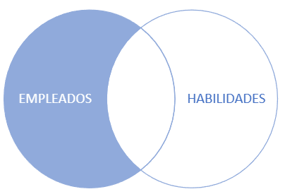

Consultas sencillas
Propuesta didáctica
En esta UT vamos a comenzar a trabajar el RA3: Consulta la información almacenada en una base de datos empleando asistentes, herramientas gráficas y el lenguaje de manipulación de datos.
Criterios de evaluación
- CE3a: Se han identificado las herramientas y sentencias para realizar consultas.
- CE3b: Se han realizado consultas simples sobre una tabla.
- CE3c: Se han realizado consultas sobre el contenido de varias tablas mediante composiciones internas.
- CE3d: Se han realizado consultas sobre el contenido de varias tablas mediante composiciones externas.
Contenidos
Realización de consultas:
- Proyección, selección y ordenación de registros.
- Operadores. Operadores de comparación. Operadores lógicos.
- Composiciones internas.
- Composiciones externas.
Cuestionario inicial
- ¿Qué diferencia existe entre una proyección y una selección?
- ¿Y entre un producto cartesiano y un join?
- ¿Qué es una cláusula?
- A la hora de recuperar los campos en una consulta, ¿cuándo usaremos
*? - ¿Qué cláusula utilizaremos para eliminar los elementos duplicados?
- ¿Y cómo renombramos el nombre de una columna en el resultado de una consulta?
- ¿Qué es la sentencia
DISTINCTy cómo se utiliza? - ¿Podemos crear variables en un campo de una consulta para utilizarlas dentro de la misma consulta?
- ¿Con qué función podemos obtener el total de elementos de una tabla?
- ¿Qué función hay que emplear para calcular la fecha exacta dentro de 3 meses?
- ¿Qué función hay que emplear para redondear hacia debajo o hacia arriba?
- ¿Cuál es la ordenación por defecto con la sentencia
ORDER BYy cómo se cambia? - ¿Qué tipos de combinaciones podemos hacer entre tablas?
- ¿Qué diferencia hay entre un
inner joiny unleft join, y cómo afecta al resultado de la consulta? - ¿Podemos combinar una tabla consigo misma?
- ¿Para qué se emplean los alias en un join?
- ¿Cómo se recuperan registros comunes a dos tablas?
- ¿Qué operadores de conjuntos conoces?
Programación de Aula (11h)
Esta unidad es la sexta, siendo la primera del bloque de consultas, impartiéndose al principio de la segunda evaluación, a principios de diciembre, con una duración estimada de 11 sesiones lectivas:
| Sesión | Contenidos | Actividades | Criterios trabajados |
|---|---|---|---|
| 1 | Álgebra relacional | ||
| 2 | SQL | AC601 | CE3a, CE3b |
| 3 | Funciones agregadas y de cadenas | AC602 | CE3b |
| 4 | Funciones de fecha y ordenando | AC603 | CE3b |
| 5 | Filtrando | AC606 | CE3b |
| 6 | Interpretando consultas | AC607 | CE3b |
| 7 | Uniendo tablas con composición interna | AC610 | CE3c |
| 8 | Composición externa | AC611 | CE3d |
| 9 | Supuesto retail | PR614 | CE3b, CE3c, CE3d |
| 10 | Resolución del supuesto | ||
| 11 | Presentación del reto - consultas | PY615 | CE3a, CE3b, CE3c, CE3d |
Álgebra Relacional
El álgebra relacional es un lenguaje formal utilizado para realizar consultas y operaciones sobre bases de datos relacionales. Fue propuesto por Edgar F. Codd en 1970 como parte de su trabajo en la teoría de bases de datos relacionales. En lugar de ser un lenguaje de programación como SQL, es un conjunto de operaciones matemáticas que permiten manipular conjuntos de datos (relaciones o tablas) de una manera lógica y estructurada.
Operaciones
Las operaciones que podemos realizar son:
| Operación | Notación | Descripción |
|---|---|---|
| Selección | σcondición(Relación) | Selecciona las tuplas que cumplen una condición específica. |
| Proyección | πatributos(Relación) | Devuelve una nueva relación con solo las columnas seleccionadas. |
| Unión | Relación1 ∪ Relación2 | Combina las tuplas de dos relaciones con el mismo esquema. |
| Intersección | Relación1 ∩ Relación2 | Devuelve las tuplas que están en ambas relaciones. |
| Diferencia | Relación1 − Relación2 | Devuelve las tuplas que están en la primera relación pero no en la segunda. |
| Producto cartesiano | Relación1 × Relación2 | Combina cada tupla de la primera relación con cada tupla de la segunda. |
| Renombrar | ρnuevoNombre(Relación) | Cambia el nombre de una relación o de sus atributos. |
| Join natural | Relación1 ⨝ Relación2 | Une dos relaciones en función de un atributo común de forma implícita. |
| Join equi | Relación1 ⨝condición Relación2 | Une dos relaciones en función de una condición, normalmente una igualdad. |
Supongamos que tenemos el siguiente esquema relacional:
Y las siguientes tablas con datos:
PRODUCTO
| id | nombre | precio | categoria_id* |
|---|---|---|---|
| 1 | Televisor | 500 | 1 |
| 2 | Laptop | 1200 | 2 |
| 3 | Smartphone | 800 | 2 |
| 4 | Lavadora | 400 | 3 |
| 5 | Tostadora | 50 | 3 |
- CATEGORIA |
| id | nombre |
|---|---|
| 1 | Electrónica |
| 2 | Informática |
| 3 | Electrodomésticos |
PRODUCTO_IMPORTACION
| id | nombre | precio | categoria_id* |
|---|---|---|---|
| 6 | Monitor | 300 | 1 |
| 7 | Teclado | 20 | 2 |
- PRODUCTO_LUJO (productos con precio mayor a 500) |
| id | nombre | precio | categoria_id* |
|---|---|---|---|
| 2 | Laptop | 1200 | 2 |
| 3 | Smartphone | 800 | 2 |
Veamos el resultado de realizar algunas operaciones:
- Selección σ
σprecio > 100(PRODUCTO)
Selecciona los productos con un precio mayor a 100.
| id | nombre | precio | categoria_id |
|---|---|---|---|
| 1 | Televisor | 500 | 1 |
| 2 | Laptop | 1200 | 2 |
| 3 | Smartphone | 800 | 2 |
| 4 | Lavadora | 400 | 3 |
| - Proyección π |
πnombre, precio(PRODUCTO)
Muestra únicamente los nombres y precios de los productos.
| id | nombre |
|---|---|
| Televisor | 500 |
| Laptop | 1200 |
| Smartphone | 800 |
| Lavadora | 400 |
| Tostadora | 50 |
- Unión ∪
PRODUCTO ∪ PRODUCTO_IMPORTACION
Combina dos tablas de productos. Es necesario que ambas tablas compartan el mismo esquema (cantidad de columnas y dominios).
| id | nombre | precio | categoria_id |
|---|---|---|---|
| 1 | Televisor | 500 | 1 |
| 2 | Laptop | 1200 | 2 |
| 3 | Smartphone | 800 | 2 |
| 4 | Lavadora | 400 | 3 |
| 5 | Tostadora | 50 | 3 |
| 6 | Monitor | 300 | 1 |
| 7 | Teclado | 20 | 2 |
| - Intersección ∩ |
PRODUCTO ∩ PRODUCTO_LUJO
Muestra los productos que están tanto en PRODUCTO como en PRODUCTO_LUJO
| id | nombre | precio | categoria_id |
|---|---|---|---|
| 2 | Laptop | 1200 | 2 |
| 3 | Smartphone | 800 | 2 |
- Diferencia −
PRODUCTO − PRODUCTO_LUJO
Devuelve los productos que están en PRODUCTO pero no en PRODUCTO_LUJO.
| id | nombre | precio | categoria_id |
|---|---|---|---|
| 1 | Televisor | 500 | 1 |
| 4 | Lavadora | 400 | 3 |
| 5 | Tostadora | 50 | 3 |
| - Producto cartesiano × |
PRODUCTO × CATEGORIA
Combina cada producto con cada categoría (mostramos solo algunas combinaciones por espacio):
| id | nombre | precio | categoria_id | nombre_categoria |
|---|---|---|---|---|
| 1 | Televisor | 500 | 1 | Electrónica |
| 1 | Televisor | 500 | 2 | Informática |
| 1 | Televisor | 500 | 3 | Electrodomésticos |
| 2 | Laptop | 1200 | 1 | Electrónica |
| 2 | Laptop | 1200 | 2 | Informática |
| ... | ... | ... | ... | ... |
- Join natural ⨝*
PRODUCTO ⨝ CATEGORIA
Combina las tablas de PRODUCTO y CATEGORIA basándose en los atributos que tengan comunes, en este caso, categoria_id.
| id | nombre | precio | categoria_id | nombre_categoria |
|---|---|---|---|---|
| 1 | Televisor | 500 | 1 | Electrónica |
| 2 | Laptop | 1200 | 2 | Informática |
| 3 | Smartphone | 800 | 2 | Informática |
| 4 | Lavadora | 400 | 3 | Electrodomésticos |
| 5 | Tostadora | 50 | 3 | Electrodomésticos |
| - Join equi ⨝expresión |
PRODUCTO ⨝PRODUCTO.categoria_id = CATEGORIA.id CATEGORIA
Une las tablas PRODUCTO y CATEGORIA basándose en la condición de igualdad entre PRODUCTO.categoria_id y CATEGORIA.id. En este caso, es igual al join natural:
| id | nombre | precio | categoria_id | nombre_categoria |
|---|---|---|---|---|
| 1 | Televisor | 500 | 1 | Electrónica |
| 2 | Laptop | 1200 | 2 | Informática |
| 3 | Smartphone | 800 | 2 | Informática |
| 4 | Lavadora | 400 | 3 | Electrodomésticos |
| 5 | Tostadora | 50 | 3 | Electrodomésticos |
Una vez vistas las operaciones, lo más normal es combinarlas para extraer información de las tablas. A continuación se muestran algunos ejemplos:
- Seleccionar todos los productos de la tabla PRODUCTO
πid, nombre, precio, categoria_id(PRODUCTO)
2. Seleccionar los productos cuyo precio sea menor o igual a 500
𝜎precio ≤ 500(PRODUCTO)
3. Nombre y precio de los productos cuyo precio sea superior a 300.
πnombre, precio(𝜎precio > 300(PRODUCTO))
4. Nombre de los productos de la categoría Electrodomésticos (primero el join y luego selección)
πnombre(PRODUCTO ⨝PRODUCTO.categoria_id = CATEGORIA.id ∧
CATEGORIA.nombre = "Electrodomésticos" CATEGORIA)
5. Nombre de los productos de la categoría Electrodomésticos (primero la selección y luego el join)
πnombre(PRODUCTO ⨝PRODUCTO.categoria_id = CATEGORIA.id (𝜎nombre = "Electrodomésticos"(CATEGORIA))
Estas operaciones forman la base teórica de cómo las bases de datos relacionales manipulan los datos y son fundamentales para comprender el funcionamiento de lenguajes como SQL.
Consultas SQL
Preparando los datos
La base de datos que vamos a utilizar a lo largo de los apuntes gestiona los datos de una empresa, sus departamentos y empleados, así como las habilidades de éstos.

Modelo físico de la BD Empresa
MariaDB / MySQLPostgreSQL
A partir del script DDL puedes importar los datos mediante:
mariadb -u s8a -p < 06bd-empresa.sql;
A continuación, nos conectamos mediante el cliente que nos sintamos más cómodo. Por ejemplo:
mariadb -u s8a -p empresa;
Recuerda que, si quieres saber la estructura de una tabla, podemos utilizar la sentencia DESCRIBE/ DESC:
DESCRIBE empleado;
-- +----------+---------------+------+-----+---------+----------------+
-- | Field | Type | Null | Key | Default | Extra |
-- +----------+---------------+------+-----+---------+----------------+
-- | CodEmp | int(10) | NO | PRI | NULL | auto_increment |
-- | CodDep | char(5) | YES | MUL | NULL | |
-- | ExTelEmp | varchar(9) | YES | | NULL | |
-- | FecInEmp | date | YES | | NULL | |
-- | FecNaEmp | date | YES | | NULL | |
-- | NifEmp | varchar(9) | YES | | NULL | |
-- | NomEmp | varchar(40) | YES | | NULL | |
-- | NumHi | int(1) | YES | | NULL | |
-- | SalEmp | decimal(12,2) | YES | | NULL | |
-- +----------+---------------+------+-----+---------+----------------+
-- 9 rows in set (0.000 sec)
A partir del script DDL puedes importar los datos mediante:
psql -U s8a -d postgres -f 06bd-empresa-psql.sql
A continuación, nos conectamos mediante el cliente que nos sintamos más cómodo. Por ejemplo:
psql -U s8a empresa;
Recuerda que, si quieres saber la estructura de una tabla, podemos utilizar el metacomando \d:
\d empleado;
-- Table "public.empleado"
-- Column | Type | Collation | Nullable | Default
-- ----------+-----------------------+-----------+----------+--------------------------------------------
-- CodEmp | integer | | not null | nextval('"empleado_CodEmp_seq"'::regclass)
-- CodDep | character(5) | | |
-- ExTelEmp | character varying(9) | | |
-- FecInEmp | date | | |
-- FecNaEmp | date | | |
-- NifEmp | character varying(9) | | |
-- NomEmp | character varying(40) | | |
-- NumHi | integer | | |
-- SalEmp | numeric(12,2) | | |
-- Indexes:
-- "empleado_pkey" PRIMARY KEY, btree ("CodEmp")
-- Check constraints:
-- "empleado_NumHi_check" CHECK ("NumHi" >= 0 AND "NumHi" <= 9)
-- Foreign-key constraints:
-- "fk_emp_dep" FOREIGN KEY ("CodDep") REFERENCES departamento("CodDep") ON UPDATE CASCADE
-- Referenced by:
-- TABLE "centro" CONSTRAINT "fk_cen_emp" FOREIGN KEY ("CodEmpDir") REFERENCES empleado("CodEmp") ON UPDATE CASCADE
-- TABLE "departamento" CONSTRAINT "fk_dep_emp" FOREIGN KEY ("CodEmpDir") REFERENCES empleado("CodEmp") ON UPDATE CASCADE
-- TABLE "habemp" CONSTRAINT "fk_habemp_emp" FOREIGN KEY ("CodEmp") REFERENCES empleado("CodEmp") ON UPDATE CASCADE
-- TABLE "hijo" CONSTRAINT "fk_hij_emp" FOREIGN KEY ("CodEmp") REFERENCES empleado("CodEmp") ON UPDATE CASCADE ON DELETE CASCADE
En la sesión anterior estudiamos tanto la parte DDL como DML del lenguaje SQL. En esta sesión y las siguientes nos vamos a centrar en las consultas, que formarían parte de DML, y más en concreto de DQL (Data Query Language). Para ello, utilizaremos la sentencia SELECT definiendo consultas que pueden ocupar una línea o varias decenas, que acceden a una única tabla (o vista), o a múltiples tablas combinadas mediante el uso de joins, e incluso que utiliza diversos esquemas dentro de la misma base de datos.
Así pues, entremos en detalle en la sentencia SELECT ... FROM. Su sintaxis completa, con las opciones más frecuentes, tanto para MariaDB como para PostgreSQL es:
SELECT {* | [DISTINCT] {columna | expresión} [[AS] alias], ... }
FROM tabla
[WHERE condición]
[GROUP BY col1 [, col2] ...]
[HAVING predicado grupo]
[ORDER BY col-n| pos-n [ASC|DESC] , col-m| pos-m [ASC|DES]…]
[LIMIT {[offset,] row_count | row_count OFFSET offset}];
En todo consulta siempre deberemos indicar qué datos queremos recuperar y de dónde lo haremos. Tras ejecutar una consulta obtendremos una tabla de datos, que puede tener una o varias columnas y ninguna, una o varias filas.
Formato
A la hora de escribir una consulta, podemos dividirla en varias líneas para facilitar su legibilidad. Recuerda que hasta que no encuentre el carácter de ;, el intérprete SQL no ejecutará la consulta.
Además, podemos utilizar espacios o tabuladores para indentar el código:
-- Todo en una línea
select nombre, apellidos, fnac from cliente order by salario desc;
-- En líneas separadas
select nombre, apellidos, fnac
from cliente
order by salario desc;
-- En líneas separadas, con atributos en diversas líneas
select nombre,
apellidos,
fnac
from cliente
order by salario desc;
Proyección
Para seleccionar campos utilizaremos bien * para indicar que queremos todas las columnas, o indicaremos de uno en uno el nombre de los campos que queremos recuperar;
MariaDB / MySQLPostgreSQL
select * from centro;
-- +--------+-----------+--------------------+-----------------------------+-----------+
-- | CodCen | CodEmpDir | NomCen | DirCen | PobCen |
-- +--------+-----------+--------------------+-----------------------------+-----------+
-- | DIGE | 1 | Dirección General | Av. Constitución 88 | Murcia |
-- | FAZS | 6 | Fábrica Zona Sur | Pol. Ind. Gral. Bastarreche | Cartagena |
-- | OFZS | 5 | Oficinas Zona Sur | Pl. España 14 | Cartagena |
-- +--------+-----------+--------------------+-----------------------------+-----------+
-- 3 rows in set (0.000 sec)
select CodCen, PobCen from centro;
-- +--------+-----------+
-- | CodCen | PobCen |
-- +--------+-----------+
-- | DIGE | Murcia |
-- | FAZS | Cartagena |
-- | OFZS | Cartagena |
-- +--------+-----------+
-- 3 rows in set (0.000 sec)
En el caso de PostgreSQL, como hemos creado las columnas con notación CamelCase, hemos de indicar los campos entre comillas dobles. Por defecto, PostgreSQL espera que todos los nombres de las columnas estén en minúsculas.
select * from centro;
-- CodCen | CodEmpDir | NomCen | DirCen | PobCen
-- --------+-----------+-------------------+-----------------------------+-----------
-- DIGE | 1 | Dirección General | Av. Constitución 88 | Murcia
-- FAZS | 6 | Fábrica Zona Sur | Pol. Ind. Gral. Bastarreche | Cartagena
-- OFZS | 5 | Oficinas Zona Sur | Pl. España 14 | Cartagena
-- (3 rows)
select "CodCen", "PobCen" from centro;
-- CodCen | PobCen
-- --------+-----------
-- DIGE | Murcia
-- FAZS | Cartagena
-- OFZS | Cartagena
-- (3 rows)
Para renombrar las columnas obtenidas, tras cada columna, mediante as podemos indicarle un alias a cada una de ellas:
select CodCen as codigo, PobCen as poblacion from centro;
-- +--------+-----------+
-- | codigo | poblacion |
-- +--------+-----------+
-- | DIGE | Murcia |
-- | FAZS | Cartagena |
-- | OFZS | Cartagena |
-- +--------+-----------+
-- 3 rows in set (0.000 sec)
Duplicados
Si realizamos la siguiente consulta sobre la tabla empleado, obtendremos todos los códigos de departamento de los empleados. Como podéis observar, aparecen repetidos, porque obtenemos una fila por empleado existente en la tabla:
select CodDep from empleado;
-- +--------+
-- | CodDep |
-- +--------+
-- | ADMZS |
-- | DIRGE |
-- | IN&DI |
-- | JEFZS |
-- | PROZS |
-- | PROZS |
-- | PROZS |
-- | PROZS |
-- | VENZS |
-- | VENZS |
-- +--------+
-- 10 rows in set (0.000 sec)
Si nos interesa recuperar datos que no contengan repetidos, podemos emplear distinct:
select distinct CodDep from empleado;
-- +--------+
-- | CodDep |
-- +--------+
-- | ADMZS |
-- | DIRGE |
-- | IN&DI |
-- | JEFZS |
-- | PROZS |
-- | VENZS |
-- +--------+
-- 6 rows in set (0.000 sec)
Operaciones aritméticas
Cada vez que hacemos referencia a un campo o un valor, también podemos realizar operaciones aritméticas sobre el valor de los campos (+, -, *, /, %, ...)
Por ejemplo, mediante la siguiente consulta podemos obtener de cada empleado, su nombre y salario, y su salario incrementado un 16%:
select NomEmp, SalEmp, SalEmp*1.16 from empleado;
-- +-----------------------------+------------+--------------+
-- | NomEmp | SalEmp | SalEmp*1.16 |
-- +-----------------------------+------------+--------------+
-- | Saladino Mandamás, Augusto | 7200000.00 | 8352000.0000 |
-- | Manrique Bacterio, Luisa | 4500000.00 | 5220000.0000 |
-- | Monforte Cid, Roldán | 5200000.00 | 6032000.0000 |
-- | Topaz Illán, Carlos | 3200000.00 | 3712000.0000 |
-- | Alada Veraz, Juana | 6200000.00 | 7192000.0000 |
-- | Gozque Altanero, Cándido | 5000000.00 | 5800000.0000 |
-- | Forzado López, Galeote | 1600000.00 | 1856000.0000 |
-- | Mascullas Alto, Eloísa | 1600000.00 | 1856000.0000 |
-- | Mando Correa, Rosa | 3100000.00 | 3596000.0000 |
-- | Mosc Amuerta, Mario | 1300000.00 | 1508000.0000 |
-- +-----------------------------+------------+--------------+
-- 10 rows in set (0.001 sec)
En MariaDB / MySQL podemos hacer cálculos sobre cálculos de otras columnas previas, utilizando asignaciones. Para ello, asignamos el resultado de una expresión a una variable a la que anteponemos el símbolo @. De esta forma, podemos usar dicha variable a lo largo de nuestra consulta:
select NomEmp, SalEmp,
@SalImp:=SalEmp*1.16,
@SalImp*1.05 as bonus
from empleado;
-- +-----------------------------+------------+----------------------+---------+
-- | NomEmp | SalEmp | @SalImp:=SalEmp*1.16 | bonus |
-- +-----------------------------+------------+----------------------+---------+
-- | Saladino Mandamás, Augusto | 7200000.00 | 8352000 | 8769600 |
-- | Manrique Bacterio, Luisa | 4500000.00 | 5220000 | 5481000 |
-- | Monforte Cid, Roldán | 5200000.00 | 6032000 | 6333600 |
-- | Topaz Illán, Carlos | 3200000.00 | 3712000 | 3897600 |
-- | Alada Veraz, Juana | 6200000.00 | 7192000 | 7551600 |
-- | Gozque Altanero, Cándido | 5000000.00 | 5800000 | 6090000 |
-- | Forzado López, Galeote | 1600000.00 | 1856000 | 1948800 |
-- | Mascullas Alto, Eloísa | 1600000.00 | 1856000 | 1948800 |
-- | Mando Correa, Rosa | 3100000.00 | 3596000 | 3775800 |
-- | Mosc Amuerta, Mario | 1300000.00 | 1508000 | 1583400 |
-- +-----------------------------+------------+----------------------+---------+
-- 10 rows in set (0.001 sec)
En cambio, en PostgreSQL no es posible utilizar variables de esta forma, pero sí podemos repetir la expresión tantas veces como necesitemos:
select "NomEmp", "SalEmp",
"SalEmp"*1.16 as "SalImp",
("SalEmp"*1.16)*1.05 as bonus
from empleado;
-- NomEmp | SalEmp | SalImp | bonus
-- ----------------------------+------------+--------------+----------------
-- Saladino Mandamás, Augusto | 7200000.00 | 8352000.0000 | 8769600.000000
-- Manrique Bacterio, Luisa | 4500000.00 | 5220000.0000 | 5481000.000000
-- Monforte Cid, Roldán | 5200000.00 | 6032000.0000 | 6333600.000000
-- Topaz Illán, Carlos | 3200000.00 | 3712000.0000 | 3897600.000000
-- Alada Veraz, Juana | 6200000.00 | 7192000.0000 | 7551600.000000
-- Gozque Altanero, Cándido | 5000000.00 | 5800000.0000 | 6090000.000000
-- Forzado López, Galeote | 1600000.00 | 1856000.0000 | 1948800.000000
-- Mascullas Alto, Eloísa | 1600000.00 | 1856000.0000 | 1948800.000000
-- Mando Correa, Rosa | 3100000.00 | 3596000.0000 | 3775800.000000
-- Mosc Amuerta, Mario | 1300000.00 | 1508000.0000 | 1583400.000000
-- (10 rows)
El operador CASE
El operador CASE permite agregar a la proyección la estructura lógica condicional de if/else. Su sintaxis es la siguiente:
CASE campo WHEN [valor1] THEN resultado [WHEN [valor2] THEN resultado ...] [ELSE resultado] END
CASE WHEN [condición] THEN resultado [WHEN [condición] THEN resultado ...] [ELSE resultado] END
Por ejemplo, a la hora de mostrar los empleados, si queremos que cuando el número de teléfono sea nulo muestre 0000 haríamos:
select CodEmp, CASE WHEN ExTelEmp is null THEN "0000" ELSE ExTelEmp END as NuevaExt
from empleado;
-- +--------+----------+
-- | CodEmp | NuevaExt |
-- +--------+----------+
-- | 1 | 1111 |
-- | 2 | 2233 |
-- | 3 | 2133 |
-- | 4 | 3838 |
-- | 5 | 1239 |
-- | 6 | 23838 |
-- | 7 | 0000 |
-- | 8 | 0000 |
-- | 9 | 12124 |
-- | 10 | 0000 |
-- +--------+----------+
-- 10 rows in set (0.001 sec)
Veamos otro ejemplo. En el caso de los departamentos, la columna TiDir indica el tipo de director, con los valores P para indicar en propiedad y F para detallar que es un director en funciones. Si quisiéramos mostrar la frase Definitivo o Interino para estos casos haríamos:
select CodDep, TiDir,
CASE TiDir WHEN "P" THEN "Definitivo" WHEN "F" THEN "Interino" END as TipoDirector
from departamento;
-- +--------+-------+--------------+
-- | CodDep | TiDir | TipoDirector |
-- +--------+-------+--------------+
-- | ADMZS | P | Definitivo |
-- | DIRGE | P | Definitivo |
-- | IN&DI | P | Definitivo |
-- | JEFZS | F | Interino |
-- | PROZS | P | Definitivo |
-- | VENZS | F | Interino |
-- +--------+-------+--------------+
-- 6 rows in set (0.000 sec)
Funciones
A la hora de recuperar o filtrar datos, es muy común utilizar funciones que facilitan el trabajo con cadenas, cálculos numéricos, etc.. Como ya has estudiado en el módulo profesional de Programación, las funciones reciben uno o más datos de entrada, también conocidos como parámetros (aunque existen algunas funciones que no reciben ninguno), y devuelven un resultado en base a los datos de entrada.
Cabe destacar que las funciones no están completamente estandarizadas entre los diferentes SGBD, así pues, conviene revisar la sintaxis exacta en el caso de migrar de un sistema a otro.
Funciones agregadas
Se emplean para realizar cálculos sobre el total de elementos de la consulta (o agrupación). Tras el SELECT indicaremos la función (o funciones) a realizar sobre el total de elementos devueltos por la consulta.
Vamos a comenzar contando la cantidad de filas mediante la función COUNT(expr) pasándole como expresión *, lo cual indica que utilice todas las columnas, independientemente de su valor:
-- Cantidad de empleados
select COUNT(*) from empleado;
-- +----------+
-- | COUNT(*) |
-- +----------+
-- | 10 |
-- +----------+
-- 1 row in set (0.000 sec)
-- Cantidad de registros en la relación N:M entre empleado y habilidad
select COUNT(*) from habemp;
-- +----------+
-- | COUNT(*) |
-- +----------+
-- | 6 |
-- +----------+
-- 1 row in set (0.000 sec)
Si queremos recuperar cuantos elementos diferentes tenemos de un campo, en la expresión usaremos DISTINCT:
-- Cantidad de empleados que tienen habilidades
select COUNT(DISTINCT codemp) from habemp;
-- +------------------------+
-- | COUNT(DISTINCT codemp) |
-- +------------------------+
-- | 4 |
-- +------------------------+
-- 1 row in set (0.002 sec)
Otras funciones de agregación que podemos emplear son:
SUM(expr): Suma todos los valores de una expresión/columnaMIN(expr)/MAX(expr): Mínimo o máximo de una expresión/columnaAVG(expr): Valor medio de una expresión/columna
-- Total de hijos de los empleados
select SUM(NumHi) from empleado;
-- +------------+
-- | SUM(NumHi) |
-- +------------+
-- | 7 |
-- +------------+
-- 1 row in set (0.000 sec)
-- Salario más alto
select MAX(SalEmp) from empleado;
-- +-------------+
-- | MAX(SalEmp) |
-- +-------------+
-- | 7200000.00 |
-- +-------------+
-- 1 row in set (0.001 sec)
-- Salario medio
select AVG(SalEmp) from empleado;
-- +----------------+
-- | AVG(SalEmp) |
-- +----------------+
-- | 3890000.000000 |
-- +----------------+
-- 1 row in set (0.000 sec)
-- Salario máximo y medio de empleados
select MAX(SalEmp), AVG(SalEmp) from empleado;
-- +-------------+----------------+
-- | MAX(SalEmp) | AVG(SalEmp) |
-- +-------------+----------------+
-- | 7200000.00 | 3890000.000000 |
-- +-------------+----------------+
-- 1 row in set (0.000 sec)
En la próxima unidad estudiaremos como podemos agregar datos por algunas columnas y realizar cálculos sobre ellas, lo que nos permitirá obtener información del tipo "Cantidad de empleados de cada departamento", "Salario medio por centro de los empleados", etc...
Cadenas
Mediante funciones de cadenas de texto podemos realizar múltiples operaciones:
| Función MariaDB | Función PostgreSQL | Descripción |
|---|---|---|
CONCAT(cadena1, cadena2, …) |
CONCAT(cadena1, cadena2, …) o cadena1 || cadena2 |
Permite unir/concatenar cadenas |
LOWER(cadena) / LCASE(cadena) |
LOWER(cadena) |
Transforma cadena a minúsculas |
UPPER(cadena) / UCASE(cadena) |
UPPER(cadena) |
Transforma cadena en MAYÚSCULAS |
LEFT(cadena, longitud) / RIGHT |
LEFT(cadena, longitud) / RIGHT(cadena, longitud) |
Devuelve los longitud caracteres de más a la izquierda/derecha de la cadena |
TRIM(cadena) / LTRIM / RTRIM |
TRIM(cadena) / LTRIM(cadena) / RTRIM(cadena) |
Elimina los espacios en blanco por delante y por detrás, o solamente los de delante/izquierda (L) o los de detrás/derecha (R) |
Algunos ejemplos de su uso:
select CONCAT(CodEmp,'_', CodDep) as concatenacion from empleado;
-- select CodEmp || '_' || CodDep as concatenacion from empleado; -- PostgreSQL
-- +---------------+
-- | concatenacion |
-- +---------------+
-- | 5_ADMZS |
-- | 1_DIRGE |
-- | 2_IN&DI |
-- | 6_JEFZS |
-- | 7_PROZS |
-- | 8_PROZS |
-- | 9_PROZS |
-- | 10_PROZS |
-- | 3_VENZS |
-- | 4_VENZS |
-- +---------------+
-- 10 rows in set (0.000 sec)
select UPPER(NomEmp), LEFT(NomEmp, 2), LEFT(RIGHT(NomEmp, 2),1) from empleado;
-- +-----------------------------+-----------------+--------------------------+
-- | UPPER(NomEmp) | LEFT(NomEmp, 2) | LEFT(RIGHT(NomEmp, 2),1) |
-- +-----------------------------+-----------------+--------------------------+
-- | SALADINO MANDAMÁS, AUGUSTO | Sa | t |
-- | MANRIQUE BACTERIO, LUISA | Ma | s |
-- | MONFORTE CID, ROLDÁN | Mo | á |
-- | TOPAZ ILLÁN, CARLOS | To | o |
-- | ALADA VERAZ, JUANA | Al | n |
-- | GOZQUE ALTANERO, CÁNDIDO | Go | d |
-- | FORZADO LÓPEZ, GALEOTE | Fo | t |
-- | MASCULLAS ALTO, ELOÍSA | Ma | s |
-- | MANDO CORREA, ROSA | Ma | s |
-- | MOSC AMUERTA, MARIO | Mo | i |
-- +-----------------------------+-----------------+--------------------------+
-- 10 rows in set (0.002 sec)
Otras funciones que podemos utilizar son CHAR_LENGTH(cadena) para obtener el tamaño, LOCATE(subcadena, cadena) para encontrar una subcadena en una cadena, REPLACE(cadena, cadenaOrigen, cadenaDestino) para sustituir una subcadena por otra o REVERSE(cadena) para invertir una cadena.
Fecha / Hora
Si trabajamos con campos de tipo fecha, podemos emplear las siguientes funciones en MariaDB o PostgreSQL:
NOW()/CURRENT_TIMESTAMP: fecha y hora actual del sistema.CURDATE()/CURRENT_DATE: fecha actual en formatoyyyy-mm-ddoyyyymmdd.DATEDIFF(fecha1, fecha2)en MariaDB, oAGE(fecha1, fecha2)en PostgreSQL: diferencia de días entre dos fechas. También se puede restar fechas directamente (fecha1 - fecha2) siempre y cuando ambos campos sean de tipoDATE.TIMESTAMPDIFF(unidad, fecha1, fecha2)en MariaDB, oEXTRACT(unidad FROM AGE(fecha1, fecha2))en PostgreSQL: diferencia medida enunidadentre dos fechas.DATE_ADD(fecha, INTERVAL expresión Tipo)/DATE_SUB, pudiendo utilizar los siguientes tipos en MariaDB, o directamente en PostgreSQL sobre un campo fecha, le podemos sumar o restar unINTERVAL.
-- fecha y hora actual (en el momento de crear los apuntes)
select NOW(), CURRENT_TIMESTAMP, CURDATE(), CURRENT_DATE;
-- +---------------------+---------------------+------------+
-- | NOW() | CURRENT_TIMESTAMP | CURDATE() |
-- +---------------------+---------------------+------------+
-- | 2024-11-17 17:39:51 | 2024-11-17 17:39:51 | 2024-11-17 |
-- +---------------------+---------------------+------------+
-- 1 row in set (0.000 sec)
-- días que faltan hasta navidad
select DATEDIFF(NOW(), '2024-12-25');
-- +-------------------------------+
-- | DATEDIFF(NOW(), '2024-12-25') |
-- +-------------------------------+
-- | -38 |
-- +-------------------------------+
-- 1 row in set (0.000 sec)
select DATEDIFF('2026-01-12', '2026-01-01');
-- SELECT DATE '2026-01-12' - DATE '2026-01-01';
-- SELECT AGE(DATE '2026-01-12', DATE '2026-01-01'); -- PostgreSQL
-- +--------------------------------------+
-- | DATEDIFF('2026-01-12', '2026-01-01') |
-- +--------------------------------------+
-- | 11 |
-- +--------------------------------------+
-- 1 row in set (0.000 sec)
-- fecha de hoy y dentro de 3 meses
select NOW(), DATE_ADD(NOW(), INTERVAL +3 MONTH)
-- select NOW(), NOW() + INTERVAL '3 months' -- PostgreSQL
-- +---------------------+------------------------------------+
-- | NOW() | DATE_ADD(NOW(), INTERVAL +3 MONTH) |
-- +---------------------+------------------------------------+
-- | 2024-11-17 17:35:08 | 2025-02-17 17:35:08 |
-- +---------------------+------------------------------------+
-- 1 row in set (0.000 sec)
Por otro lado, además de operaciones sobre campos fecha, también podemos realizar transformaciones sobre fecha para obtener una parte o información relativa a la misma en MariaDB:
YEAR(fecha): año en formatoaaaaMONTH(fecha): mes en formatomm- Otras funciones útiles son
SECOND,MINUTE,HOUR,DAY,WEEK,DAYOFWEEK…
O en PostgreSQL, directamente mediante EXTRACT unidad from CAMPO o DATE_PART('unidad', CAMPO):
select CodEmp, FecInEmp, YEAR(FecInEmp) as anyoInc, MONTH(FecInEmp) as mesInc,
DAYOFWEEK(FecInEmp) as diaSemana from empleado;
-- select "CodEmp", "FecInEmp", EXTRACT(YEAR FROM "FecInEmp") as anyoInc, EXTRACT(MONTH FROM "FecInEmp") as mesInc,
-- EXTRACT(DOW FROM "FecInEmp")+1 as diaSemana from empleado; -- PostgreSQL
-- +--------+------------+---------+--------+-----------+
-- | CodEmp | FecInEmp | anyoInc | mesInc | diaSemana |
-- +--------+------------+---------+--------+-----------+
-- | 1 | 1972-07-01 | 1972 | 7 | 7 |
-- | 2 | 1991-06-14 | 1991 | 6 | 6 |
-- | 3 | 1984-06-08 | 1984 | 6 | 6 |
-- | 4 | 1990-08-09 | 1990 | 8 | 5 |
-- | 5 | 1976-08-07 | 1976 | 8 | 7 |
-- | 6 | 1991-08-01 | 1991 | 8 | 5 |
-- | 7 | 1994-06-30 | 1994 | 6 | 5 |
-- | 8 | 1994-08-15 | 1994 | 8 | 2 |
-- | 9 | 1982-06-10 | 1982 | 6 | 5 |
-- | 10 | 1993-11-02 | 1993 | 11 | 3 |
-- +--------+------------+---------+--------+-----------+
-- 10 rows in set (0.000 sec)
Por último, para formatear un campo de tipo fecha y mostrarla conforme necesitemos, dependiendo del SGBD utilizaremos:
- MariaDB: podemos hacer uso de
DATE_FORMAT(fecha, formato)para obtener información similar a la anterior (le podemos pasar un tercer parámetro con el locale para configurar el idioma de salida y sobrescribir el del sistema):
select CodEmp, FecInEmp,
DATE_FORMAT(FecInEmp, "%Y %y") as anyoInc,
DATE_FORMAT(FecInEmp, "%M %m") as mesInc,
DATE_FORMAT(FecInEmp, "%w")+1 as diaSemana
from empleado;
-- +--------+------------+---------+-------------+-----------+
-- | CodEmp | FecInEmp | anyoInc | mesInc | diaSemana |
-- +--------+------------+---------+-------------+-----------+
-- | 1 | 1972-07-01 | 1972 72 | July 07 | 7 |
-- | 2 | 1991-06-14 | 1991 91 | June 06 | 6 |
-- | 3 | 1984-06-08 | 1984 84 | June 06 | 6 |
-- | 4 | 1990-08-09 | 1990 90 | August 08 | 5 |
-- | 5 | 1976-08-07 | 1976 76 | August 08 | 7 |
-- | 6 | 1991-08-01 | 1991 91 | August 08 | 5 |
-- | 7 | 1994-06-30 | 1994 94 | June 06 | 5 |
-- | 8 | 1994-08-15 | 1994 94 | August 08 | 2 |
-- | 9 | 1982-06-10 | 1982 82 | June 06 | 5 |
-- | 10 | 1993-11-02 | 1993 93 | November 11 | 3 |
-- +--------+------------+---------+-------------+-----------+
-- 10 rows in set (0.001 sec)
- PostgreSQL: usaremos TO_CHAR()
select "CodEmp", "FecInEmp",
TO_CHAR("FecInEmp", 'YYYY YY') as anyoInc,
TO_CHAR("FecInEmp", 'Month MM') as mesInc,
EXTRACT(DOW FROM "FecInEmp") + 1 as diaSemana
from empleado;
-- CodEmp | FecInEmp | anyoinc | mesinc | diasemana
-- --------+------------+---------+--------------+-----------
-- 1 | 1972-07-01 | 1972 72 | July 07 | 7
-- 2 | 1991-06-14 | 1991 91 | June 06 | 6
-- 3 | 1984-06-08 | 1984 84 | June 06 | 6
-- 4 | 1990-08-09 | 1990 90 | August 08 | 5
-- 5 | 1976-08-07 | 1976 76 | August 08 | 7
-- 6 | 1991-08-01 | 1991 91 | August 08 | 5
-- 7 | 1994-06-30 | 1994 94 | June 06 | 5
-- 8 | 1994-08-15 | 1994 94 | August 08 | 2
-- 9 | 1982-06-10 | 1982 82 | June 06 | 5
-- 10 | 1993-11-02 | 1993 93 | November 11 | 3
-- (10 rows)
Finalmente, otra función muy importante a la hora de trabajar con fechas es la función CAST(expr as tipo) que realiza la conversión de tipos de datos.
De esta manera podemos convertir una expresión de cadena en un tipo fecha:
select CAST("2024-12-9" as DATE);
Condicionales y Nulos
De forma similar al operador CASE, únicamente en MariaDB, si preferimos, podemos hacer uso de la función IF(expr,V,F).
Por ejemplo, podemos reescribir la misma consulta vista anteriormente:
select CodEmp, CASE WHEN ExTelEmp is null THEN "0000" ELSE ExTelEmp END as NuevaExt
from empleado;
por otra que utilice la función IF mejorando la legibilidad:
select CodEmp, IF(ExTelEmp is null, "0000", ExTelEmp) as NuevaExt from empleado;
-- +--------+----------+
-- | CodEmp | NuevaExt |
-- +--------+----------+
-- | 1 | 1111 |
-- | 2 | 2233 |
-- | 3 | 2133 |
-- | 4 | 3838 |
-- | 5 | 1239 |
-- | 6 | 23838 |
-- | 7 | 0000 |
-- | 8 | 0000 |
-- | 9 | 12124 |
-- | 10 | 0000 |
-- +--------+----------+
-- 10 rows in set (0.003 sec)
Cuando trabajamos con nulos también podemos emplear las funciones:
- Tanto en MariaDB como PostgreSQL, usaremos
COALESCE(campo1, campo2, ...): devuelve el primer valor no nulo de la lista de parámetros - En MariaDB, también podemos utilizar
IFNULL(campo, valor): devuelvevalorsicampoes nulo
Dicho esto, las siguientes consultas obtienen el mismo resultado:
select CodEmp, COALESCE(ExTelEmp, '0000') as NuevaExt from empleado;
select CodEmp, IF(ExTelEmp is null, "0000", ExTelEmp) as NuevaExt from empleado;
select CodEmp, IFNULL(ExTelEmp, '0000') as NuevaExt from empleado;
Otras
También tenemos funciones matemáticas como:
ABS(num): obtiene el valor absoluto denumSQRT(num),POW(base, exponente): raíz cuadrada denum, potencia debaseelevado aexponenteRAND(): obtiene un número aleatorioROUND(num)/FLOOR(num)/CEILING(num): redondea un número, por exceso o por defectoTRUNCATE(num,d): truncanumconddecimales
Veamos unos ejemplos de redondeo de cantidades:
select AVG(NumHi), ROUND(avg(NumHi)), FLOOR(avg(NumHi)), CEILING(avg(NumHi)), TRUNCATE(AVG(NumHi), 1) from empleado;
-- +------------+-------------------+-------------------+---------------------+-------------------------+
-- | AVG(NumHi) | ROUND(avg(NumHi)) | FLOOR(avg(NumHi)) | CEILING(avg(NumHi)) | truncate(avg(NumHi), 1) |
-- +------------+-------------------+-------------------+---------------------+-------------------------+
-- | 0.7000 | 1 | 0 | 1 | 0.7 |
-- +------------+-------------------+-------------------+---------------------+-------------------------+
-- 1 row in set (0.000 sec)
Otra función muy empleada es FORMAT(numero, decimales) para formatear los números con separadores de miles y cantidad de decimales:
select FORMAT(1234567890.12345678, 4), FORMAT(1234567890.12, 4), FORMAT(1234567890.12345678, 0) ;
-- +--------------------------------+--------------------------+--------------------------------+
-- | FORMAT(1234567890.12345678, 4) | FORMAT(1234567890.12, 4) | FORMAT(1234567890.12345678, 0) |
-- +--------------------------------+--------------------------+--------------------------------+
-- | 1,234,567,890.1235 | 1,234,567,890.1200 | 1,234,567,890 |
-- +--------------------------------+--------------------------+--------------------------------+
-- 1 row in set (0.000 sec)
También podemos emplear funciones para encriptar o comprimir, así como para trabajar con coordenadas geográficas.
Ordenando y Limitando
Es muy común tener que ordenar el resultado de una consulta para darle más importancia a unos campos que otros, e incluso, reducir el número de tuplas recuperadas.
Así pues, para ordenar mediante la cláusula ORDER BY {campo | pos} [ASC|DESC], indicando los diferentes campos separados por coma.
select NomEmp, NifEmp from empleado ORDER BY NomEmp;
-- +-----------------------------+-----------+
-- | NomEmp | NifEmp |
-- +-----------------------------+-----------+
-- | Alada Veraz, Juana | 38223923T |
-- | Forzado López, Galeote | 47123132D |
-- | Gozque Altanero, Cándido | 26454122D |
-- | Mando Correa, Rosa | 11312121D |
-- | Manrique Bacterio, Luisa | 21231347K |
-- | Mascullas Alto, Eloísa | 32132154H |
-- | Monforte Cid, Roldán | 23823930D |
-- | Mosc Amuerta, Mario | 32939393D |
-- | Saladino Mandamás, Augusto | 21451451V |
-- | Topaz Illán, Carlos | 38293923L |
-- +-----------------------------+-----------+
-- 10 rows in set (0.003 sec)
Por defecto, la ordenación se realiza de forma ascendente. Por lo tanto, la consulta anterior y la siguiente son similares:
select NomEmp, NifEmp from empleado ORDER BY NomEmp;
select NomEmp, NifEmp from empleado ORDER BY NomEmp ASC;
Algunos desarrolladores prefieren explicitar el orden de ORDER BY para evitar ambigüedades. Otros, en cambio, prefieren obviar la opción ASC para reducir el tamaño de las consultas.
Por otro lado, tal como hemos comentado previamente, podemos ordenar por más de una columna, indicando para cada una de ellas diferentes tipos de ordenaciones:
select CodDep, NomEmp from empleado ORDER BY CodDep ASC, NomEmp DESC;
-- +--------+-----------------------------+
-- | CodDep | NomEmp |
-- +--------+-----------------------------+
-- | ADMZS | Alada Veraz, Juana |
-- | DIRGE | Saladino Mandamás, Augusto |
-- | IN&DI | Manrique Bacterio, Luisa |
-- | JEFZS | Gozque Altanero, Cándido |
-- | PROZS | Mosc Amuerta, Mario |
-- | PROZS | Mascullas Alto, Eloísa |
-- | PROZS | Mando Correa, Rosa |
-- | PROZS | Forzado López, Galeote |
-- | VENZS | Topaz Illán, Carlos |
-- | VENZS | Monforte Cid, Roldán |
-- +--------+-----------------------------+
-- 10 rows in set (0.000 sec)
Rendimiento
Hay que tener en cuenta que ordenar los resultados de una consulta requiere colocar todos los datos en memoria, y dependiendo de la cantidad, puede ser una operación computacionalmente compleja.
Finalmente, a la hora de indicar el nombre de las columnas de ordenación, también podemos un número indicando la posición de la columna (en el siguiente ejemplo, 1 referencia a NomEmp y 2 a NifEmp):
select NomEmp, Nifemp from empleado ORDER BY 1 ASC;
-- +-----------------------------+-----------+
-- | NomEmp | Nifemp |
-- +-----------------------------+-----------+
-- | Alada Veraz, Juana | 38223923T |
-- | Forzado López, Galeote | 47123132D |
-- | Gozque Altanero, Cándido | 26454122D |
-- | Mando Correa, Rosa | 11312121D |
-- | Manrique Bacterio, Luisa | 21231347K |
-- | Mascullas Alto, Eloísa | 32132154H |
-- | Monforte Cid, Roldán | 23823930D |
-- | Mosc Amuerta, Mario | 32939393D |
-- | Saladino Mandamás, Augusto | 21451451V |
-- | Topaz Illán, Carlos | 38293923L |
-- +-----------------------------+-----------+
-- 10 rows in set (0.000 sec)
Además, si queremos restringir y limitar el número de resultados de la consulta usaremos LIMIT cantidad:
select CodEmp, NomEmp from empleado LIMIT 3;
-- +--------+-----------------------------+
-- | CodEmp | NomEmp |
-- +--------+-----------------------------+
-- | 1 | Saladino Mandamás, Augusto |
-- | 2 | Manrique Bacterio, Luisa |
-- | 3 | Monforte Cid, Roldán |
-- +--------+-----------------------------+
-- 3 rows in set (0.000 sec)
Reduciendo el tráfico
En ocasiones, cuando queremos obtener una muestra de los datos, en vez de hacer una consulta select * from ... para comprobar qué datos almacena una determinada tabla, es mucho mejor acostumbrarse a realizar un select * from ... LIMIT 10. De este modo, no sobrecargamos el servidor ni incrementamos el tráfico de datos.
Si no queremos coger los primeros elementos, podemos hacer uso LIMIT inicio, cantidad, teniendo en cuenta que inicio referencia al desplazamiento, es decir, la cantidad de filas que se ignorarán.
select CodEmp, NomEmp from empleado LIMIT 2,4;
-- +--------+---------------------------+
-- | CodEmp | NomEmp |
-- +--------+---------------------------+
-- | 3 | Monforte Cid, Roldán |
-- | 4 | Topaz Illán, Carlos |
-- | 5 | Alada Veraz, Juana |
-- | 6 | Gozque Altanero, Cándido |
-- +--------+---------------------------+
-- 4 rows in set (0.000 sec)
Por último, podemos expresar lo mismo mediante LIMIT cantidad OFFSET inicio, sólo que cambiamos el orden de los parámetros:
select CodEmp, NomEmp from empleado LIMIT 4 OFFSET 2;
-- +--------+---------------------------+
-- | CodEmp | NomEmp |
-- +--------+---------------------------+
-- | 3 | Monforte Cid, Roldán |
-- | 4 | Topaz Illán, Carlos |
-- | 5 | Alada Veraz, Juana |
-- | 6 | Gozque Altanero, Cándido |
-- +--------+---------------------------+
-- 4 rows in set (0.000 sec)
Empates
¿Qué sucede si al ordenar hay varios registros que empatan en la primera/última posición? Por ejemplo, si ordenamos por salario y los dos últimos empleados tienen el mismo salario, ¿cuál de los dos se mostrará?
Es muy común realizar consultas donde queremos recuperar el mejor/peor elemento que cumple un criterio, y en ocasiones, hay empates y la técnica de ordenar y recuperar un elemento mediante ORDER BY campo LIMIT 1 no funciona.
Para resolver estos casos, MariaDB soporta la cláusula FETCH FIRST n ROWS WITH TIES que permite recuperar todas las filas que empatan en una posición. PostgreSQL no soporta esta cláusula, pero se puede simular mediante una subconsulta o utilizando DISTINCT ON.
Por ejemplo, para recuperar los empleados con salarios más bajos, haríamos:
-- Recuperar los empleados con el salario más bajo
select NomEmp, SalEmp from empleado
ORDER BY SalEmp ASC
FETCH FIRST 1 ROW WITH TIES;
-- +-------------------------+------------+
-- | NomEmp | SalEmp |
-- +-------------------------+------------+
-- | Mosc Amuerta, Mario | 1300000.00 |
-- +-------------------------+------------+
-- 1 row in set (0.000 sec)
-- Recuperar los empleados con los dos salarios más bajos
select NomEmp, SalEmp from empleado
ORDER BY SalEmp ASC
FETCH FIRST 2 ROWS WITH TIES;
-- +-------------------------+------------+
-- | NomEmp | SalEmp |
-- +-------------------------+------------+
-- | Mosc Amuerta, Mario | 1300000.00 |
-- | Mascullas Alto, Eloísa | 1600000.00 |
-- | Forzado López, Galeote | 1600000.00 |
-- +-------------------------+------------+
-- 3 rows in set (0.000 sec)
Selección
La selección en SQL permite filtrar filas de una tabla en función de condiciones específicas. Esto se logra mediante la cláusula WHERE, que define los criterios de filtrado.
Para filtrar los datos y realizar una selección de tuplas, podemos emplear tanto funciones como operadores dentro del WHERE. Para realizar las comparaciones, se expresan mediante expresion1 operador expresion2, pudiendo utilizar los operadores relacionales <, <=, >, >=, =, !=, así como los operadores lógicos como and, or, not, etc...
select NomEmp, CodDep, FecNaEmp from empleado WHERE CodDep='DIRGE';
-- +-----------------------------+--------+------------+
-- | NomEmp | CodDep | FecNaEmp |
-- +-----------------------------+--------+------------+
-- | Saladino Mandamás, Augusto | DIRGE | 1961-08-07 |
-- +-----------------------------+--------+------------+
-- 1 row in set (0.000 sec)
select NomEmp from empleado WHERE SalEmp<2000000;
-- +-------------------------+
-- | NomEmp |
-- +-------------------------+
-- | Forzado López, Galeote |
-- | Mascullas Alto, Eloísa |
-- | Mosc Amuerta, Mario |
-- +-------------------------+
-- 3 rows in set (0.000 sec)
Como puede observarse, no es necesario que el o los atributos que usemos en la selección luego aparezcan en la proyección, ni viceversa.
Rangos
Supongamos que queremos recuperar los empleados que cobran entre uno y dos millones. Podemos hacerlo haciendo uso de una conjunción entre dos comparaciones:
select NomEmp, SalEmp from empleado where SalEmp >= 1000000 AND SalEmp <= 2000000;
-- +-------------------------+------------+
-- | NomEmp | SalEmp |
-- +-------------------------+------------+
-- | Forzado López, Galeote | 1600000.00 |
-- | Mascullas Alto, Eloísa | 1600000.00 |
-- | Mosc Amuerta, Mario | 1300000.00 |
-- +-------------------------+------------+
-- 3 rows in set (0.000 sec)
Si el conjunto de valores a comparar forma parte de un rango numérico, es mejor utilizar BETWEEN .. AND, siguiendo la sintaxis expresión1 [NOT] BETWEEN expresión2 AND expresión3:
Así pues, la misma consulta la podemos reescribir así:
select NomEmp, SalEmp from empleado where SalEmp BETWEEN 1000000 AND 2000000;
-- +-------------------------+------------+
-- | NomEmp | SalEmp |
-- +-------------------------+------------+
-- | Forzado López, Galeote | 1600000.00 |
-- | Mascullas Alto, Eloísa | 1600000.00 |
-- | Mosc Amuerta, Mario | 1300000.00 |
-- +-------------------------+------------+
-- 3 rows in set (0.000 sec)
También podemos negar la cláusula o usarla con fechas:
select NomEmp, SalEmp from empleado
where SalEmp NOT BETWEEN 2000000 AND 6000000;
-- +-----------------------------+------------+
-- | NomEmp | SalEmp |
-- +-----------------------------+------------+
-- | Saladino Mandamás, Augusto | 7200000.00 |
-- | Alada Veraz, Juana | 6200000.00 |
-- | Forzado López, Galeote | 1600000.00 |
-- | Mascullas Alto, Eloísa | 1600000.00 |
-- | Mosc Amuerta, Mario | 1300000.00 |
-- +-----------------------------+------------+
-- 5 rows in set (0.000 sec)
select NomEmp, FecInEmp, FecNaEmp from empleado
where FecInEmp BETWEEN '1970/01/01' AND '1980/01/01';
-- +-----------------------------+------------+------------+
-- | NomEmp | FecInEmp | FecNaEmp |
-- +-----------------------------+------------+------------+
-- | Saladino Mandamás, Augusto | 1972-07-01 | 1961-08-07 |
-- | Alada Veraz, Juana | 1976-08-07 | 1958-03-08 |
-- +-----------------------------+------------+------------+
-- 2 rows in set (0.000 sec)
Conjuntos
Si en vez de un rango, queremos comprobar si el resultado de la expresión coincide con uno de entre una lista de valores (los cuales deben coincidir en su tipo de datos), usaremos el operador IN con la sintaxis exp1 [NOT] IN (const1 [,const2])
select Codemp, NomEmp, SalEmp from empleado where Codemp IN (1,3,5,7);
-- +--------+-----------------------------+------------+
-- | Codemp | NomEmp | SalEmp |
-- +--------+-----------------------------+------------+
-- | 1 | Saladino Mandamás, Augusto | 7200000.00 |
-- | 3 | Monforte Cid, Roldán | 5200000.00 |
-- | 5 | Alada Veraz, Juana | 6200000.00 |
-- | 7 | Forzado López, Galeote | 1600000.00 |
-- +--------+-----------------------------+------------+
select NomEmp, CodDep from empleado where CodDep IN ('PROZS','VENZS');
-- +-------------------------+--------+
-- | NomEmp | CodDep |
-- +-------------------------+--------+
-- | Forzado López, Galeote | PROZS |
-- | Mascullas Alto, Eloísa | PROZS |
-- | Mando Correa, Rosa | PROZS |
-- | Mosc Amuerta, Mario | PROZS |
-- | Monforte Cid, Roldán | VENZS |
-- | Topaz Illán, Carlos | VENZS |
-- +-------------------------+--------+
-- 6 rows in set (0.000 sec)
Patrón texto
Cuando tenemos campos de tipo texto, lo normal no es comparar por todo el valor exacto, sino por una subcadena existente. Para ello, usaremos el operador LIKE acompañado de un patrón, siguiendo la sintaxis columna [NOT] LIKE patrón.
En el patrón de búsqueda, podemos emplear los comodines _ para indicar que ocupa un carácter y % para cero o más caracteres.
-- Centros que acaban en Sur
select NomCen, PobCen from centro where Nomcen LIKE '%Sur';
-- +-------------------+-----------+
-- | NomCen | PobCen |
-- +-------------------+-----------+
-- | Fábrica Zona Sur | Cartagena |
-- | Oficinas Zona Sur | Cartagena |
-- +-------------------+-----------+
-- 2 rows in set (0.003 sec)
-- Empleados cuya segunda letra del nombre sea a
select Nomemp, CodDep from empleado where Nomemp LIKE '_a%';
-- +-----------------------------+--------+
-- | Nomemp | CodDep |
-- +-----------------------------+--------+
-- | Saladino Mandamás, Augusto | DIRGE |
-- | Manrique Bacterio, Luisa | IN&DI |
-- | Mascullas Alto, Eloísa | PROZS |
-- | Mando Correa, Rosa | PROZS |
-- +-----------------------------+--------+
-- 4 rows in set (0.000 sec)
Expresiones regulares
Si la lógica a comprobar es más compleja, podemos hacer uso de expresiones regulares, mediante la cláusula REGEXP. Algunos ejemplos:
- Empleados cuyo nombre empieza por vocal (
^comienza y entre corchetes ponemos todos los posibles valores, es decir, por una vocal en mayúsculas o minúsculas)
select CodEmp, NomEmp from empleado
where NomEmp REGEXP '^[AEIOUaeiou]';
- Departamentos cuyo nombre contiene exactamente dos palabras (^[^ ]+ una o más letras al inicio, y [^ ]+$ una o más letras al final)
select CodDep, NomDep
from departamento
where NomDep REGEXP '^[^ ]+ [^ ]+$';
Valor nulo
Para comprobar si un campo contiene valores nulos (o si queremos saber si tiene algún valor, sea cual sea) usaremos el operador IS NULL con la sintaxis columna IS [NOT] NULL:
select NomEmp, ExtelEmp from empleado where ExtelEmp IS NULL;
-- +-------------------------+----------+
-- | NomEmp | ExtelEmp |
-- +-------------------------+----------+
-- | Forzado López, Galeote | NULL |
-- | Mascullas Alto, Eloísa | NULL |
-- | Mosc Amuerta, Mario | NULL |
-- +-------------------------+----------+
-- 3 rows in set (0.000 sec)
select NomEmp, ExtelEmp from empleado where ExtelEmp IS NOT NULL;
-- +-----------------------------+----------+
-- | NomEmp | ExtelEmp |
-- +-----------------------------+----------+
-- | Saladino Mandamás, Augusto | 1111 |
-- | Manrique Bacterio, Luisa | 2233 |
-- | Monforte Cid, Roldán | 2133 |
-- | Topaz Illán, Carlos | 3838 |
-- | Alada Veraz, Juana | 1239 |
-- | Gozque Altanero, Cándido | 23838 |
-- | Mando Correa, Rosa | 12124 |
-- +-----------------------------+----------+
Operadores lógicos
Respecto a las condiciones compuestas, podemos unir operadores mediante AND (conjunción), OR (disyunción) y NOT (negación).
select NomEmp, CodDep, ExtelEmp from empleado
where CodDep='ADMZS' OR ExtelEmp IS NULL;
-- +-------------------------+--------+----------+
-- | NomEmp | CodDep | ExtelEmp |
-- +-------------------------+--------+----------+
-- | Alada Veraz, Juana | ADMZS | 1239 |
-- | Forzado López, Galeote | PROZS | NULL |
-- | Mascullas Alto, Eloísa | PROZS | NULL |
-- | Mosc Amuerta, Mario | PROZS | NULL |
-- +-------------------------+--------+----------+
select NomEmp, CodDep, SalEmp from empleado
where CodDep in ('ADMZS','PROZS','VENZS') AND SalEmp>5000000;
-- +-----------------------+--------+------------+
-- | NomEmp | CodDep | SalEmp |
-- +-----------------------+--------+------------+
-- | Alada Veraz, Juana | ADMZS | 6200000.00 |
-- | Monforte Cid, Roldán | VENZS | 5200000.00 |
-- +-----------------------+--------+------------+
Prioridad de los operadores
Conviene recordar la prioridad de los operadores a la hora de evaluar una expresión:
- Se evalúa la multiplicación (
*) y la división (/) al mismo nivel. - A continuación sumas (
+) y restas (-). - Todas las comparaciones (
<,>, …). - Después se evalúan los operadores
IS NULL,IN,LIKE BETWEEN...NOT.AND.OR.
Uniendo Tablas
Hasta ahora nos hemos dedicado a realizar consultas sobre uno o más atributos de una determinada tabla. El modelo relacional se basa en la relación de una o más tablas, y por lo tanto, necesitamos de un mecanismo que nos permite obtener información de tablas que están relacionadas.
Dicho esto, para unir varias tablas (realizar un join) tenemos diferentes formas de hacerlo:
- cross join: producto cartesiano entre dos tablas
- inner join: une dos tablas por campos que coinciden en valor.
- natural join: une dos tablas por campos que se llaman igual
- outer join: une dos tablas, recuperando todos los elementos que están en una de ellas y de la segunda los que coinciden en valor. En este caso, podemos distinguir entre left join o right join dependiendo que tabla es la que aporta todos los elementos.
En el siguiente gráfico tienes resumidas de forma visual todas las combinaciones posibles:

Joins en SQL - De GermanX - Trabajo propio, CC BY-SA 4.0, https://commons.wikimedia.org/w/index.php?curid=55878387
Veamos estas operaciones en detalle.
Producto cartesiano
El producto cartesiano (cross join) de dos tablas son todas las combinaciones de las filas de una tabla unidas a las filas de la otra tabla. Es decir, cada fila de A se cruza con todas las de B.
select NomEmp, nomdep from empleado, departamento;
-- +-----------------------------+----------------------------+
-- | NomEmp | NomDep |
-- +-----------------------------+----------------------------+
-- | Saladino Mandamás, Augusto | Administración Zona Sur |
-- | Saladino Mandamás, Augusto | Dirección General |
-- | Saladino Mandamás, Augusto | Investigación y Diseño |
-- | Saladino Mandamás, Augusto | Jefatura Fábrica Zona Sur |
-- | Saladino Mandamás, Augusto | Producción Zona Sur |
-- | Saladino Mandamás, Augusto | Ventas Zona Sur |
-- | Manrique Bacterio, Luisa | Administración Zona Sur |
-- | Manrique Bacterio, Luisa | Dirección General |
-- | Manrique Bacterio, Luisa | Investigación y Diseño |
-- ...
-- Empleado: 10 registros X Departamento: 6 registros
-- Resultado: 60 registros
Otra forma de expresar lo mismo es mediante cross join:
select NomEmp, NomDep from empleado CROSS JOIN departamento;
Composición interna
La operación [INNER] JOIN combina registros de dos tablas siempre que existan valores coincidentes en un campo común (clave ajena con clave primaria). Para ello, se indica una tabla seguida (opcionalmente con el prefijo INNER) de JOIN con la segunda tabla, y tras ON, igualamos la clave ajena con la primaria:
select NomEmp, NomDep from empleado JOIN departamento ON empleado.CodDep=departamento.CodDep;
-- +-----------------------------+----------------------------+
-- | NomEmp | NomDep |
-- +-----------------------------+----------------------------+
-- | Alada Veraz, Juana | Administración Zona Sur |
-- | Saladino Mandamás, Augusto | Dirección General |
-- | Manrique Bacterio, Luisa | Investigación y Diseño |
-- | Gozque Altanero, Cándido | Jefatura Fábrica Zona Sur |
-- | Forzado López, Galeote | Producción Zona Sur |
-- | Mascullas Alto, Eloísa | Producción Zona Sur |
-- | Mando Correa, Rosa | Producción Zona Sur |
-- | Mosc Amuerta, Mario | Producción Zona Sur |
-- | Monforte Cid, Roldán | Ventas Zona Sur |
-- | Topaz Illán, Carlos | Ventas Zona Sur |
-- +-----------------------------+----------------------------+
-- 10 rows in set (0.001 sec)
Es conveniente, y realmente más cómodo, poner un alias a las tablas (normalmente la inicial del nombre de la tabla tras el propio nombre de la misma):
select NomEmp, NomDep
from empleado e JOIN departamento d
on e.CodDep=d.CodDep;
En versiones antiguas de SQL era más común indicar las tablas separadas por coma y realizar el join en el WHERE, uniendo la clave ajena con la clave primaria de la tabla a la que referencia. Aunque a nivel funcional el resultado es el mismo, es recomendable utilizar la sintaxis JOIN ... ON por legibilidad, y es probable, que el optimizador de consultas del SGBD funcione mejor:
--- SQL 86
select NomEmp, NomDep
from empleado e, departamento d
where e.CodDep=d.CodDep;
--- SQL 92
select NomEmp, NomDep
from empleado e JOIN departamento d
on e.CodDep=d.CodDep;
Cuando coincide el nombre de los atributos podemos emplear la cláusula USING (listaDeColumnas) para simplificar la consulta:
select NomEmp, NomDep
from empleado e JOIN departamento d
USING (CodDep);
Natural join
Forma parte del estándar SQL desde SQL:1999, y se trata de una especialización de INNER JOIN, ya que simplifica la unión entre dos tablas al basarse automáticamente en las columnas con nombres coincidentes en ambas tablas.
La tabla resultante contiene sólo una columna por cada par de columnas con el mismo nombre.
select NomEmp, NomDep
from empleado NATURAL JOIN departamento;
-- +-----------------------------+----------------------------+
-- | NomEmp | NomDep |
-- +-----------------------------+----------------------------+
-- | Alada Veraz, Juana | Administración Zona Sur |
-- | Saladino Mandamás, Augusto | Dirección General |
-- | Manrique Bacterio, Luisa | Investigación y Diseño |
-- | Gozque Altanero, Cándido | Jefatura Fábrica Zona Sur |
-- | Forzado López, Galeote | Producción Zona Sur |
-- | Mascullas Alto, Eloísa | Producción Zona Sur |
-- | Mando Correa, Rosa | Producción Zona Sur |
-- | Mosc Amuerta, Mario | Producción Zona Sur |
-- | Monforte Cid, Roldán | Ventas Zona Sur |
-- | Topaz Illán, Carlos | Ventas Zona Sur |
-- +-----------------------------+----------------------------+
-- 10 rows in set (0.001 sec)
Consultas sobre varias tablas
Cuando necesitamos información que está en diferentes tablas, o necesitamos que los datos obtenidos dependan de las relaciones en las que participan, deberemos emparejar los campos que han de tener valores iguales (FKs con PKs)
Algunos aspectos a tener en cuenta:
- Pueden combinarse tantas tablas como se desee.
- El criterio de combinación puede estar formado por más de una pareja de columnas.
- En la cláusula
SELECTpueden citarse columnas de ambas tablas, coincidan o no con la combinación. - Si hay columnas con el mismo nombre en las distintas tablas, deben identificarse especificando la tabla de procedencia o utilizando un alias de tabla.
Veamos algunos ejemplos. Antes ya hemos visto cómo recuperar el nombre de los departamentos donde trabaja cada empleado. Si también queremos obtener el nombre del centro, necesitamos unir las tres tablas:
select NomEmp, NomDep, NomCen
from empleado e JOIN departamento d ON e.CodDep = d.CodDep
JOIN centro c ON d.CodCen = c.CodCen;
-- +-----------------------------+----------------------------+--------------------+
-- | NomEmp | NomDep | NomCen |
-- +-----------------------------+----------------------------+--------------------+
-- | Saladino Mandamás, Augusto | Dirección General | Dirección General |
-- | Manrique Bacterio, Luisa | Investigación y Diseño | Dirección General |
-- | Gozque Altanero, Cándido | Jefatura Fábrica Zona Sur | Fábrica Zona Sur |
-- | Forzado López, Galeote | Producción Zona Sur | Fábrica Zona Sur |
-- | Mascullas Alto, Eloísa | Producción Zona Sur | Fábrica Zona Sur |
-- | Mando Correa, Rosa | Producción Zona Sur | Fábrica Zona Sur |
-- | Mosc Amuerta, Mario | Producción Zona Sur | Fábrica Zona Sur |
-- | Alada Veraz, Juana | Administración Zona Sur | Oficinas Zona Sur |
-- | Monforte Cid, Roldán | Ventas Zona Sur | Oficinas Zona Sur |
-- | Topaz Illán, Carlos | Ventas Zona Sur | Oficinas Zona Sur |
-- +-----------------------------+----------------------------+--------------------+
-- 10 rows in set (0.000 sec)
Si además, queremos el director del centro, necesitamos volver a unir con empleado para obtener su nombre:
select e.NomEmp, NomDep, NomCen, e2.NomEmp as Director
from empleado e JOIN departamento d ON e.CodDep = d.CodDep
JOIN centro c ON d.CodCen = c.CodCen
JOIN empleado e2 ON c.CodEmpDir = e2.CodEmp;
-- +-----------------------------+----------------------------+--------------------+-----------------------------+
-- | NomEmp | NomDep | NomCen | Director |
-- +-----------------------------+----------------------------+--------------------+-----------------------------+
-- | Alada Veraz, Juana | Administración Zona Sur | Oficinas Zona Sur | Alada Veraz, Juana |
-- | Saladino Mandamás, Augusto | Dirección General | Dirección General | Saladino Mandamás, Augusto |
-- | Manrique Bacterio, Luisa | Investigación y Diseño | Dirección General | Saladino Mandamás, Augusto |
-- | Gozque Altanero, Cándido | Jefatura Fábrica Zona Sur | Fábrica Zona Sur | Gozque Altanero, Cándido |
-- | Forzado López, Galeote | Producción Zona Sur | Fábrica Zona Sur | Gozque Altanero, Cándido |
-- | Mascullas Alto, Eloísa | Producción Zona Sur | Fábrica Zona Sur | Gozque Altanero, Cándido |
-- | Mando Correa, Rosa | Producción Zona Sur | Fábrica Zona Sur | Gozque Altanero, Cándido |
-- | Mosc Amuerta, Mario | Producción Zona Sur | Fábrica Zona Sur | Gozque Altanero, Cándido |
-- | Monforte Cid, Roldán | Ventas Zona Sur | Oficinas Zona Sur | Alada Veraz, Juana |
-- | Topaz Illán, Carlos | Ventas Zona Sur | Oficinas Zona Sur | Alada Veraz, Juana |
-- +-----------------------------+----------------------------+--------------------+-----------------------------+
-- 10 rows in set (0.000 sec)
En todo momento, podemos añadir filtros sobre una composición. Por ejemplo, recuperaremos los nombres de los empleados, departamentos en los que trabaja y sus centros, de aquellos empleados y que tienen al menos un hijo y cuyo departamento tenga un presupuesto superior a 20000000:
select e.NomEmp, d.NomDep, c.NomCen
from empleado e JOIN departamento d ON e.CodDep = d.CodDep
JOIN centro c ON d.CodCen = c.CodCen
where e.NumHi >= 1 and
d.PreAnu > 20000000
order by e.CodEmp;
-- +-----------------------------+----------------------+--------------------+
-- | NomEmp | NomDep | NomCen |
-- +-----------------------------+----------------------+--------------------+
-- | Saladino Mandamás, Augusto | Dirección General | Dirección General |
-- | Mascullas Alto, Eloísa | Producción Zona Sur | Fábrica Zona Sur |
-- | Mando Correa, Rosa | Producción Zona Sur | Fábrica Zona Sur |
-- +-----------------------------+----------------------+--------------------+
-- 3 rows in set (0.000 sec)
Composición reflexiva
Cuando tenemos una relación reflexiva de una tabla consigo misma, para obtener los datos, hemos de realizar una join de la tabla con otra instancia de sí misma.
Por ejemplo, en la tabla departamento, la columna CodDepDep referenciar al departamento del que depende; aquellos que tenga como valor NULL, no dependen de ninguno y podríamos decir que son departamentos principales.
select CodDep, CodDepDep, NomDep from departamento;
-- +--------+-----------+----------------------------+
-- | CodDep | CodDepDep | NomDep |
-- +--------+-----------+----------------------------+
-- | ADMZS | NULL | Administración Zona Sur |
-- | DIRGE | NULL | Dirección General |
-- | IN&DI | DIRGE | Investigación y Diseño |
-- | JEFZS | NULL | Jefatura Fábrica Zona Sur |
-- | PROZS | JEFZS | Producción Zona Sur |
-- | VENZS | ADMZS | Ventas Zona Sur |
-- +--------+-----------+----------------------------+
-- 6 rows in set (0.000 sec)
Así pues, si queremos recuperar todos los departamentos secundarios, así como el código y nombre de su departamento principal necesitamos referencias a la tabla departamento mediante un join consigo misma. Para ello, es imperativo utilizar un alias descriptivo para identificar el rol de la tabla en cada caso (en nuestro caso, sec como departamento secundario y prin para los principales):
select sec.CodDep as CodDepSec, sec.NomDep as NomDepSec, prin.CodDep as CodDepPrin, prin.NomDep as NomDepPrin
from departamento prin JOIN departamento sec ON prin.CodDep = sec.CodDepDep;
-- +-----------+--------------------------+------------+----------------------------+
-- | CodDepSec | NomDepSec | CodDepPrin | NomDepPrin |
-- +-----------+--------------------------+------------+----------------------------+
-- | IN&DI | Investigación y Diseño | DIRGE | Dirección General |
-- | PROZS | Producción Zona Sur | JEFZS | Jefatura Fábrica Zona Sur |
-- | VENZS | Ventas Zona Sur | ADMZS | Administración Zona Sur |
-- +-----------+--------------------------+------------+----------------------------+
-- 3 rows in set (0.000 sec)
Composición externa
Cuando efectuamos una combinación interna los registros que se quedan sin emparejar en la otra tabla no aparecen en el resultado.
En ocasiones no queremos únicamente los registros que están conectados, sino que nos interesa recuperarlos todos (conectados y no conectados) y de los conectados, sus datos. En otras ocasiones, queremos recuperar todos los que no están conectados... Para ello, necesitamos hacer uso de las composiciones externas.
Mediante una combinación externa, aparecerán los datos emparejados más los que no están relacionados, ya sea por la:
- Izquierda:
LEFT [OUTER] JOIN– Todos los de la tabla de la izquierda, y de la derecha los relacionados. - Derecha:
RIGHT [OUTER] JOIN– Los de la izquierda los relacionados, y de la derecha todos los datos.
Veamos con un ejemplo qué datos obtenemos. Primero realizamos un join entre empleados y sus habilidades para obtener los empleados que tienen habilidades (obtenemos 6 registros porque tenemos clientes que tienen más de una habilidad, pero no todos los clientes tienen habilidades):
select e.CodEmp, e.NomEmp, he.*
from empleado e JOIN habemp he ON e.CodEmp = he.CodEmp;
-- +--------+-----------------------------+--------+--------+--------+
-- | CodEmp | NomEmp | CodHab | CodEmp | NivHab |
-- +--------+-----------------------------+--------+--------+--------+
-- | 1 | Saladino Mandamás, Augusto | GEREN | 1 | 10 |
-- | 1 | Saladino Mandamás, Augusto | RELPU | 1 | 9 |
-- | 3 | Monforte Cid, Roldán | MARKE | 3 | 9 |
-- | 5 | Alada Veraz, Juana | GESCO | 5 | 9 |
-- | 5 | Alada Veraz, Juana | RELPU | 5 | 8 |
-- | 8 | Mascullas Alto, Eloísa | FONTA | 8 | 7 |
-- +--------+-----------------------------+--------+--------+--------+
-- 6 rows in set (0.001 sec)
Si en cambio queremos recuperar todos los empleados, y si tienen habilidades, su información, haríamos un left join. Ahora se muestran todos los empleados, y además, aquel que tenga habilidades, aparecerá tantas veces como habilidades tenga. En cambio, de los que no tienen habilidades aparecerá NULL en las columnas correspondientes:
select e.CodEmp, e.NomEmp, he.*
from empleado e LEFT JOIN habemp he ON e.CodEmp = he.CodEmp;
-- +--------+-----------------------------+--------+--------+--------+
-- | CodEmp | NomEmp | CodHab | CodEmp | NivHab |
-- +--------+-----------------------------+--------+--------+--------+
-- | 1 | Saladino Mandamás, Augusto | GEREN | 1 | 10 |
-- | 1 | Saladino Mandamás, Augusto | RELPU | 1 | 9 |
-- | 2 | Manrique Bacterio, Luisa | NULL | NULL | NULL |
-- | 3 | Monforte Cid, Roldán | MARKE | 3 | 9 |
-- | 4 | Topaz Illán, Carlos | NULL | NULL | NULL |
-- | 5 | Alada Veraz, Juana | GESCO | 5 | 9 |
-- | 5 | Alada Veraz, Juana | RELPU | 5 | 8 |
-- | 6 | Gozque Altanero, Cándido | NULL | NULL | NULL |
-- | 7 | Forzado López, Galeote | NULL | NULL | NULL |
-- | 8 | Mascullas Alto, Eloísa | FONTA | 8 | 7 |
-- | 9 | Mando Correa, Rosa | NULL | NULL | NULL |
-- | 10 | Mosc Amuerta, Mario | NULL | NULL | NULL |
-- +--------+-----------------------------+--------+--------+--------+
-- 12 rows in set (0.000 sec)
Si cambiamos la consulta y hacemos un right join, recuperaremos la misma información que con un inner join ya que en la tabla habemp no podemos tener registros que no referencien a empleados existentes, por la propia definición de integridad referencial.
select e.CodEmp, e.NomEmp, he.*
from empleado e RIGHT JOIN habemp he ON e.CodEmp = he.CodEmp;
-- +--------+-----------------------------+--------+--------+--------+
-- | CodEmp | NomEmp | CodHab | CodEmp | NivHab |
-- +--------+-----------------------------+--------+--------+--------+
-- | 1 | Saladino Mandamás, Augusto | GEREN | 1 | 10 |
-- | 1 | Saladino Mandamás, Augusto | RELPU | 1 | 9 |
-- | 3 | Monforte Cid, Roldán | MARKE | 3 | 9 |
-- | 5 | Alada Veraz, Juana | GESCO | 5 | 9 |
-- | 5 | Alada Veraz, Juana | RELPU | 5 | 8 |
-- | 8 | Mascullas Alto, Eloísa | FONTA | 8 | 7 |
-- +--------+-----------------------------+--------+--------+--------+
-- 6 rows in set (0.001 sec)
No obstante, si cambiamos el orden de las tablas en el join, sí que tiene sentido hacer un right join:
select he.*, e.CodEmp, e.NomEmp
from habemp he RIGHT JOIN empleado e ON e.CodEmp = he.CodEmp;
-- +--------+--------+--------+--------+-----------------------------+
-- | CodHab | CodEmp | NivHab | CodEmp | NomEmp |
-- +--------+--------+--------+--------+-----------------------------+
-- | GEREN | 1 | 10 | 1 | Saladino Mandamás, Augusto |
-- | RELPU | 1 | 9 | 1 | Saladino Mandamás, Augusto |
-- | NULL | NULL | NULL | 2 | Manrique Bacterio, Luisa |
-- | MARKE | 3 | 9 | 3 | Monforte Cid, Roldán |
-- | NULL | NULL | NULL | 4 | Topaz Illán, Carlos |
-- | GESCO | 5 | 9 | 5 | Alada Veraz, Juana |
-- | RELPU | 5 | 8 | 5 | Alada Veraz, Juana |
-- | NULL | NULL | NULL | 6 | Gozque Altanero, Cándido |
-- | NULL | NULL | NULL | 7 | Forzado López, Galeote |
-- | FONTA | 8 | 7 | 8 | Mascullas Alto, Eloísa |
-- | NULL | NULL | NULL | 9 | Mando Correa, Rosa |
-- | NULL | NULL | NULL | 10 | Mosc Amuerta, Mario |
-- +--------+--------+--------+--------+-----------------------------+
-- 12 rows in set (0.000 sec)
¿Y si tenemos tres tablas? Vamos a unir las habilidades de los empleados con todas las existentes (seguimos recuperando los mismos 6 registros, sólo que ahora tenemos acceso a los nombres de las habilidades):
select e.CodEmp, e.NomEmp, he.*, h.*
from empleado e JOIN habemp he ON e.CodEmp = he.CodEmp
JOIN habilidad h ON he.CodHab = h.CodHab;
-- +--------+-----------------------------+--------+--------+--------+--------+----------------------+
-- | CodEmp | NomEmp | CodHab | CodEmp | NivHab | CodHab | DesHab |
-- +--------+-----------------------------+--------+--------+--------+--------+----------------------+
-- | 1 | Saladino Mandamás, Augusto | GEREN | 1 | 10 | GEREN | Gerencia |
-- | 1 | Saladino Mandamás, Augusto | RELPU | 1 | 9 | RELPU | Relaciones Públicas |
-- | 3 | Monforte Cid, Roldán | MARKE | 3 | 9 | MARKE | Marketing |
-- | 5 | Alada Veraz, Juana | GESCO | 5 | 9 | GESCO | Gestión Contable |
-- | 5 | Alada Veraz, Juana | RELPU | 5 | 8 | RELPU | Relaciones Públicas |
-- | 8 | Mascullas Alto, Eloísa | FONTA | 8 | 7 | FONTA | Fontanería |
-- +--------+-----------------------------+--------+--------+--------+--------+----------------------+
-- 6 rows in set (0.000 sec)
Si quiero recuperar todos los empleados y el nombre de la habilidad si la tienen, tenemos que hacer un left join:
select e.CodEmp, e.NomEmp, he.*, h.*
from empleado e LEFT JOIN habemp he ON e.CodEmp = he.CodEmp
JOIN habilidad h ON he.CodHab = h.CodHab;
-- +--------+-----------------------------+--------+--------+--------+--------+----------------------+
-- | CodEmp | NomEmp | CodHab | CodEmp | NivHab | CodHab | DesHab |
-- +--------+-----------------------------+--------+--------+--------+--------+----------------------+
-- | 1 | Saladino Mandamás, Augusto | GEREN | 1 | 10 | GEREN | Gerencia |
-- | 1 | Saladino Mandamás, Augusto | RELPU | 1 | 9 | RELPU | Relaciones Públicas |
-- | 3 | Monforte Cid, Roldán | MARKE | 3 | 9 | MARKE | Marketing |
-- | 5 | Alada Veraz, Juana | GESCO | 5 | 9 | GESCO | Gestión Contable |
-- | 5 | Alada Veraz, Juana | RELPU | 5 | 8 | RELPU | Relaciones Públicas |
-- | 8 | Mascullas Alto, Eloísa | FONTA | 8 | 7 | FONTA | Fontanería |
-- +--------+-----------------------------+--------+--------+--------+--------+----------------------+
-- 6 rows in set (0.001 sec)
¿Qué ha pasado? ¿Por qué sólo 6 registros? Al realizar el segundo join, ha eliminado aquellos registros que tienen la habilidad nula.
Pero ¿cómo lo solucionamos? Primero vamos a unir los códigos y habilidades, y luego hacemos el join por la derecha con todos los empleados:
select e.CodEmp, e.NomEmp, he.*, h.*
from habemp he JOIN habilidad h ON he.CodHab = h.CodHab
RIGHT JOIN empleado e ON e.CodEmp = he.CodEmp;
-- +--------+-----------------------------+--------+--------+--------+--------+----------------------+
-- | CodEmp | NomEmp | CodHab | CodEmp | NivHab | CodHab | DesHab |
-- +--------+-----------------------------+--------+--------+--------+--------+----------------------+
-- | 1 | Saladino Mandamás, Augusto | GEREN | 1 | 10 | GEREN | Gerencia |
-- | 1 | Saladino Mandamás, Augusto | RELPU | 1 | 9 | RELPU | Relaciones Públicas |
-- | 2 | Manrique Bacterio, Luisa | NULL | NULL | NULL | NULL | NULL |
-- | 3 | Monforte Cid, Roldán | MARKE | 3 | 9 | MARKE | Marketing |
-- | 4 | Topaz Illán, Carlos | NULL | NULL | NULL | NULL | NULL |
-- | 5 | Alada Veraz, Juana | GESCO | 5 | 9 | GESCO | Gestión Contable |
-- | 5 | Alada Veraz, Juana | RELPU | 5 | 8 | RELPU | Relaciones Públicas |
-- | 6 | Gozque Altanero, Cándido | NULL | NULL | NULL | NULL | NULL |
-- | 7 | Forzado López, Galeote | NULL | NULL | NULL | NULL | NULL |
-- | 8 | Mascullas Alto, Eloísa | FONTA | 8 | 7 | FONTA | Fontanería |
-- | 9 | Mando Correa, Rosa | NULL | NULL | NULL | NULL | NULL |
-- | 10 | Mosc Amuerta, Mario | NULL | NULL | NULL | NULL | NULL |
-- +--------+-----------------------------+--------+--------+--------+--------+----------------------+
-- 12 rows in set (0.000 sec)
Veamos otro ejemplo. Ahora quiero recuperar todas las habilidades, y si lo hay, el empleado que la tiene. En este caso, pongo a la izquierda las habilidades y hago dos left joins:
select h.*, he.*, e.CodEmp, e.NomEmp
from habilidad h LEFT JOIN habemp he ON he.CodHab = h.CodHab
LEFT JOIN empleado e ON e.CodEmp = he.CodEmp;
-- +--------+----------------------+--------+--------+--------+--------+-----------------------------+
-- | CodHab | DesHab | CodHab | CodEmp | NivHab | CodEmp | NomEmp |
-- +--------+----------------------+--------+--------+--------+--------+-----------------------------+
-- | FONTA | Fontanería | FONTA | 8 | 7 | 8 | Mascullas Alto, Eloísa |
-- | GEREN | Gerencia | GEREN | 1 | 10 | 1 | Saladino Mandamás, Augusto |
-- | GESCO | Gestión Contable | GESCO | 5 | 9 | 5 | Alada Veraz, Juana |
-- | INFOR | INFORMATICA | NULL | NULL | NULL | NULL | NULL |
-- | MARKE | Marketing | MARKE | 3 | 9 | 3 | Monforte Cid, Roldán |
-- | MECAN | Mecanografía | NULL | NULL | NULL | NULL | NULL |
-- | RELPU | Relaciones Públicas | RELPU | 1 | 9 | 1 | Saladino Mandamás, Augusto |
-- | RELPU | Relaciones Públicas | RELPU | 5 | 8 | 5 | Alada Veraz, Juana |
-- | TELEF | Telefonista | NULL | NULL | NULL | NULL | NULL |
-- +--------+----------------------+--------+--------+--------+--------+-----------------------------+
-- 9 rows in set (0.000 sec)
La misma consulta con sólo una consulta externa sería:
select h.*, he.*, e.CodEmp, e.NomEmp
from empleado e JOIN habemp he ON e.CodEmp = he.CodEmp
RIGHT JOIN habilidad h ON he.CodHab = h.CodHab;
-- +--------+----------------------+--------+--------+--------+--------+-----------------------------+
-- | CodHab | DesHab | CodHab | CodEmp | NivHab | CodEmp | NomEmp |
-- +--------+----------------------+--------+--------+--------+--------+-----------------------------+
-- | FONTA | Fontanería | FONTA | 8 | 7 | 8 | Mascullas Alto, Eloísa |
-- | GEREN | Gerencia | GEREN | 1 | 10 | 1 | Saladino Mandamás, Augusto |
-- | GESCO | Gestión Contable | GESCO | 5 | 9 | 5 | Alada Veraz, Juana |
-- | INFOR | INFORMATICA | NULL | NULL | NULL | NULL | NULL |
-- | MARKE | Marketing | MARKE | 3 | 9 | 3 | Monforte Cid, Roldán |
-- | MECAN | Mecanografía | NULL | NULL | NULL | NULL | NULL |
-- | RELPU | Relaciones Públicas | RELPU | 1 | 9 | 1 | Saladino Mandamás, Augusto |
-- | RELPU | Relaciones Públicas | RELPU | 5 | 8 | 5 | Alada Veraz, Juana |
-- | TELEF | Telefonista | NULL | NULL | NULL | NULL | NULL |
-- +--------+----------------------+--------+--------+--------+--------+-----------------------------+
-- 9 rows in set (0.000 sec)
Antijoin
Se conoce como antijoin los registros obtenidos de una tabla que no se combinan con otra. Es decir, son los registros que no se seleccionan al realizar un inner join, y de ahí el prefijo anti.
Para aprender su uso, vamos a recuperar los empleados que no tienen habilidades:

Antijoin entre empleados y habilidades
Pero antes, volvamos al ejemplo anterior donde obteníamos los empleados que tienen habilidades:
select e.CodEmp, e.NomEmp, he.*
from empleado e JOIN habemp he ON e.CodEmp = he.CodEmp;
-- +--------+-----------------------------+--------+--------+--------+
-- | CodEmp | NomEmp | CodHab | CodEmp | NivHab |
-- +--------+-----------------------------+--------+--------+--------+
-- | 1 | Saladino Mandamás, Augusto | GEREN | 1 | 10 |
-- | 1 | Saladino Mandamás, Augusto | RELPU | 1 | 9 |
-- | 3 | Monforte Cid, Roldán | MARKE | 3 | 9 |
-- | 5 | Alada Veraz, Juana | GESCO | 5 | 9 |
-- | 5 | Alada Veraz, Juana | RELPU | 5 | 8 |
-- | 8 | Mascullas Alto, Eloísa | FONTA | 8 | 7 |
-- +--------+-----------------------------+--------+--------+--------+
-- 6 rows in set (0.001 sec)
¿Y cómo hago para obtener los empleados que no tienen habilidades? Si realizamos un join por la izquierda, sí que aparecerán los empleados que no las tienen (además de los que las tienen):
select e.CodEmp, e.NomEmp, he.*
from empleado e LEFT JOIN habemp he ON e.CodEmp = he.CodEmp;
-- +--------+-----------------------------+--------+--------+--------+
-- | CodEmp | NomEmp | CodHab | CodEmp | NivHab |
-- +--------+-----------------------------+--------+--------+--------+
-- | 1 | Saladino Mandamás, Augusto | GEREN | 1 | 10 |
-- | 1 | Saladino Mandamás, Augusto | RELPU | 1 | 9 |
-- | 2 | Manrique Bacterio, Luisa | NULL | NULL | NULL |
-- | 3 | Monforte Cid, Roldán | MARKE | 3 | 9 |
-- | 4 | Topaz Illán, Carlos | NULL | NULL | NULL |
-- | 5 | Alada Veraz, Juana | GESCO | 5 | 9 |
-- | 5 | Alada Veraz, Juana | RELPU | 5 | 8 |
-- | 6 | Gozque Altanero, Cándido | NULL | NULL | NULL |
-- | 7 | Forzado López, Galeote | NULL | NULL | NULL |
-- | 8 | Mascullas Alto, Eloísa | FONTA | 8 | 7 |
-- | 9 | Mando Correa, Rosa | NULL | NULL | NULL |
-- | 10 | Mosc Amuerta, Mario | NULL | NULL | NULL |
-- +--------+-----------------------------+--------+--------+--------+
-- 12 rows in set (0.000 sec)
Así pues, si sobre el left join, nos quedamos con los que tienen la clave primaria referenciada nula, obtendremos justo los empleados que no tienen habilidades (operación que se conoce como anti-join):
select e.CodEmp, e.NomEmp, he.*
from empleado e LEFT JOIN habemp he ON e.CodEmp = he.CodEmp
where he.CodEmp is null;
-- +--------+---------------------------+--------+--------+--------+
-- | CodEmp | NomEmp | CodHab | CodEmp | NivHab |
-- +--------+---------------------------+--------+--------+--------+
-- | 2 | Manrique Bacterio, Luisa | NULL | NULL | NULL |
-- | 4 | Topaz Illán, Carlos | NULL | NULL | NULL |
-- | 6 | Gozque Altanero, Cándido | NULL | NULL | NULL |
-- | 7 | Forzado López, Galeote | NULL | NULL | NULL |
-- | 9 | Mando Correa, Rosa | NULL | NULL | NULL |
-- | 10 | Mosc Amuerta, Mario | NULL | NULL | NULL |
-- +--------+---------------------------+--------+--------+--------+
-- 6 rows in set (0.003 sec)
Full Outer Join
Aunque no está soportado por MariaDB, conviene conocer la combinación externa completa, aunque su uso es muy limitado (por la propia restricción de integridad referencial). Su resultado presenta los resultados de la tabla de la izquierda y de la tabla de la derecha aunque no tengan correspondencia en la otra tabla.
Es decir, la tabla combinada contendrá entonces todos los registros de ambas tablas y presentará valores nulos para registros sin pareja.
Si necesitamos dicho resultado, podemos simularlo haciendo una unión entre un left join y un right join. De esta manera obtendríamos todos los registros de T1 y los valores de T2 relacionados o nulos en los que no, y en una segunda consulta, los valores de T1 relacionados o nulos en los que no, y todos los valores de T2:
select * from t1
LEFT JOIN t2 ON t1.id = t2.id
UNION
select * from t1
RIGHT JOIN t2 ON t1.id = t2.id
Operadores de conjuntos
Los operadores de conjuntos no operan sobre tipos de datos simples, sino sobre los resultados de dos o más consultas, las cuales deben tener la misma estructura, es decir, que la cantidad y los tipos de datos deben ser los mismos.
Los operadores de conjuntos son:
UNION: Devuelve el conjunto de filas resultante de la unión de las dos consultas, sin duplicados.UNION ALL: Devuelve el conjunto de filas resultante de la unión de las dos consultas, incluyendo los duplicados.INTERSECT: Devuelve la intersección entre los dos conjuntos de filas.EXCEPT: Devuelve todas aquellas filas de la primera consulta que no estén en la segunda.

Operadores de conjuntos - https://jsmshaktisingh.medium.com/set-theory-for-sql-joins-9739b6943eb3
Veamos unos ejemplos sobre empleados y directivos:
-- directivos y empleados con hijos
select CodEmpDir from departamento
UNION
select CodEmp from empleado where NumHi > 0;
-- +-----------+
-- | CodEmpDir |
-- +-----------+
-- | 1 |
-- | 2 |
-- | 3 |
-- | 5 |
-- | 6 |
-- | 9 |
-- | 8 |
-- +-----------+
-- 7 rows in set (0.001 sec)
-- directivos que tienen hijos
select CodEmpDir from departamento
INTERSECT
select CodEmp from empleado where NumHi > 0;
-- +-----------+
-- | CodEmpDir |
-- +-----------+
-- | 1 |
-- | 3 |
-- | 5 |
-- | 6 |
-- | 9 |
-- +-----------+
-- 5 rows in set (0.000 sec)
-- directivos que no tienen hijos
select CodEmpDir from departamento
EXCEPT
select CodEmp from empleado where NumHi > 0;
-- +-----------+
-- | CodEmpDir |
-- +-----------+
-- | 2 |
-- +-----------+
-- 1 row in set (0.000 sec)
Autoevaluación
¿Qué puedes deducir de los empleados 4 y 7?
Referencias
- Sintaxis SQL oficial de PostgreSQL y MariaDB.
-
Cheatsheets de https://learnsql.com/ sobre:
- Funciones SQL
- Joins SQL
-
Materiales sobre el módulo de BD:
-
Consultes de selecció simple i complexes - Institut Obert de Catalunya.
- Consultas sobre una tabla, sobre varias tablas con composición interna, y con varias tablas con composición externa de José Juan Sánchez.
- Introducción a SQL y Consultas sobre varias tablas. Cláusula join de Jorge Sánchez.
- Realización de consultas de Javier Gutiérrez.
- Consulta de bases de datos de gestionbasesdatos.readthedocs.io
- Introducción a SQL, por Luis Valencia y David Orellana, de la Universidad de Sevilla.
Actividades
-
AC601. (RABD.3 // CE3a, CE3b // 3p) Una vez cargada la base de datos de
empresautilizada en los apuntes, tras comprobar la estructura de las tablasempleadoydepartamento, se pide realizar las siguientes consultas: -
Lista el nombre de todos los departamentos que hay en la tabla
departamento. - Lista los nombres y los presupuestos de todos los departamentos.
- Lista todas las columnas de la tabla
departamento. - Lista el nombre de los empleados junto con su salario.
- Recupera todas las posibilidades de número de hijos que tienen los empleados (debes recuperar 0, 1 y 2).
- Lista el nombre y el complemento familiar (= salario * nº hijos * 4 /100) de todos los empleados.
- Lista el nombre de los departamentos, el presupuesto en euros y también en dólares estadounidenses (USD).
-
A partir de la consulta anterior, utiliza los siguientes alias para las columnas: nombre de departamento, euros, dólares.
-
AC602. (RABD.3 // CE3a, CE3b // 3p) Sobre la base de datos
empresa, y haciendo uso de funciones, realiza las siguientes consultas: -
Lista los nombres y sus presupuestos de todos los departamentos de la tabla
departamento, convirtiendo los nombres a mayúscula. - Lista los nombres y los salarios de todos los empleados, convirtiendo los nombres a minúsculas.
- Lista el nombre de todos los empleados en una columna, y en otra columna recupera en mayúsculas los dos primeros caracteres del código del departamento.
- Lista el código del empleado y del departamento de todos los empleados, así como un código formado por los datos de estos campos unidos más la extensión telefónica (si no tienen teléfono, cambiar por
XXXX). - Lista el nombre de los empleados, así como un campo para su nombre y otro para sus apellidos (puedes utilizar las funciones
LOCATE(subcadena, cadena)ySUBSTRING(cadena, posición [,longitud])) - Lista los nombres, el salario y el salario incrementado un 12%, redondeando el salario incrementado.
- Lista los nombres, el salario y el salario incrementado un 12%, truncando el salario incrementado con un único decimal.
-
Muestra el nombre de los empleados, la cantidad de hijos que tiene, y el tipo de familia, mostrando
Sin familiasi no tiene hijos,Ordinariasi sólo tiene un hijo,Semi-numerosasi tiene 2 hijos yNumerosasi tiene 3 o más hijos. -
AC603. (RABD.3 // CE3b // 3p) Sobre la base de datos
empresa, realiza las siguientes consultas: -
Lista, para cada empleado, además de su nombre, en campos separados, el día, el mes y el año de cuando nació.
- Listado de empleados, con su nombre, fecha de nacimiento y edad.
- Para cada empleado, necesitamos su nombre, fecha de incorporación y días de vacaciones extra (por cada 4 años en la empresa, tiene un día extra)
- Crea un listado con el nombre de los departamentos, así como un nuevo código formado por el código del departamento, un número aleatorio de dos cifras y el código del centro.
- Listado del tipo de director, código, nombre y presupuesto de los departamentos ordenado por tipo de director (orden alfabético) y dentro de este criterio por presupuesto anual en orden ascendente.
- Listado del nombre y salario de los empleados (con dos decimales y separadores de miles) ordenado por criterio descendente del salario.
- Lista los tres departamentos ordenados por presupuesto anual y por el código del centro con menor presupuesto.
-
Recupera el empleado que más cobra.
-
AR604. (RABD.3 // CE3b // 3p) Realiza las consultas de la 1 a la 19 del apartado 1.1.3 de Consultas sobre una tabla de la base de datos de Tienda de informática, que podemos encontrar en las actividades propuestas en los apuntes del docente José Juan Sánchez. Puedes comprobarlas en https://sql-playground.com/.
-
AP605. (RABD.3 // CE3b // 3p) Realiza las consultas de la 1 a la 20 del apartado 1.2.3 de Consultas sobre una tabla de la base de datos de Gestión de empleados, que podemos encontrar en las actividades propuestas en los apuntes del docente José Juan Sánchez. Puedes comprobarlas en https://sql-playground.com/.
-
AC606. (RABD.3 // CE3b // 3p) Sobre la base de datos
empresa, realiza las siguientes consultas: -
Recupera el nombre del empleado, salario y número de hijos del empleado con código
1. - Listar sin repeticiones el código de todos los departamentos que tengan trabajadores incorporados antes del
1/1/92. - Listar el nombre de los trabajadores que no tienen extensión telefónica.
- Listar el nombre y presupuesto de los departamentos no ubicados en los centros con código
DIGEoFAZS. - Listar el nombre y salario de los trabajadores que ganen menos de 2 o más de 5 millones de euros.
- Listar el código y nombre de los empleados cuyo código sea distinto de
1,4,6,8y de10. - Listar el nombre y fecha de nacimiento de los hijos de empleado que tengan como parte de su nombre o apellidos la secuencia de letras
León. - Listar el nombre y salario anual de los empleados que ganan menos de 4 millones pero que ingresaron en la empresa antes de 1985.
-
Listar el nombre y NIF de los empleados que tienen un NIF con la letra
DoV, y que:a) Trabajan en los departamentos
IN&DIoDIRGEy ganan más de 5 millones; o
b) Fueron contratados en 1994. -
AC607. (RABD.3 // CE3b // 3p) Explica qué recuperan las siguientes consultas (en lenguaje natural, no leyendo la consulta):
SELECT CodEmp, ROUND(SalEmp, 2) FROM empleado WHERE SalEmp > 2500000;
SELECT SUM(NumHij) FROM hijo;
SELECT CodHab, DesHab FROM habilidad WHERE LOWER(DesHab) LIKE '%gestión%';
SELECT AVG(SalEmp) FROM empleado WHERE NumHi >= 1;
SELECT NomEmp, TIMESTAMPDIFF(YEAR, FecInEmp, CURDATE()) FROM empleado WHERE TIMESTAMPDIFF(YEAR, FecInEmp, CURDATE()) > 25;
SELECT CodCen, NomCen FROM centro WHERE PobCen = "Badajoz" ORDER BY NomCen DESC;
SELECT COUNT(*) FROM departamento WHERE PreAnu > 20000000;
SELECT CodEmp, NomEmp, COALESCE(ExTelEmp, NumHi, "0000") from empleado;
SELECT CodHab, DesHab, CHAR_LENGTH(DesHab) FROM habilidad WHERE CodHab LIKE 'A%';
-
AR608. (RABD.3 // CE3b // 3p) Realiza las consultas de la 20 a la 36 del apartado 1.1.3 de Consultas sobre una tabla de la base de datos de Tienda de informática, que podemos encontrar en las actividades propuestas en los apuntes del docente José Juan Sánchez. Puedes comprobarlas en https://sql-playground.com/.
-
AP609. (RABD.3 // CE3b // 3p) Realiza las consultas de la 21 a la 36 del apartado 1.2.3 de Consultas sobre una tabla de la base de datos de Gestión de empleados, que podemos encontrar en las actividades propuestas en los apuntes del docente José Juan Sánchez. Puedes comprobarlas en https://sql-playground.com/.
-
AC610. (RABD.3 // CE3c // 3p) Sobre la base de datos
empresa, y utilizando composiciones internas, realiza las siguientes consultas: -
Muestra para cada departamento, su nombre, presupuesto y el nombre del centro al que pertenece.
- Muestra para cada departamento, su nombre, presupuesto y el nombre del empleado que lo dirige.
- Muestra para cada departamento, su nombre, presupuesto, el nombre del centro al que pertenece y el nombre del empleado que lo dirige.
- Muestra el nombre del departamento, el nombre del centro al que pertenece y el nombre del empleado que lo dirige, de aquel departamento que tenga el presupuesto más alto.
- Listar los empleados del centro
Fábrica Zona Sur. - Listar el nombre del empleado y el nombre y fecha de nacimiento de su hijo/hija para aquellos empleados con un único hijo. Ordenar por fecha de nacimiento de los hijos.
-
Usando los operadores de conjuntos, recupera:
- el código de departamento para aquellos departamentos que tienen empleados.
- el código de departamento para aquellos departamentos que no tienen empleados.
- los empleados que no son directivos de ningún departamento (no aparecen en
departamento.CodEmpDir). - los empleados que no son directivos de ningún departamento ni de ningún centro
- Recupera los empleados que trabajan en
Oficinas Zona Sury que tienen hijos. - Recupera los departamentos que tienen empleados con la habilidad
Fontanería. - Recupera todos los departamentos que dependen de un departamento secundario.
-
AC611. (RABD.3 // CE3d // 3p) Sobre la base de datos
empresa, y utilizando composiciones externas, realiza las siguientes consultas: -
Muestra un listado de todas las habilidades, y si tienen, el código del empleado y el nivel de su habilidad.
- Muestra un listado de las habilidades que no tiene ningún empleado.
- Comprueba si los empleados que no tienen hijos (
empleado.NumHi) coinciden con los empleados no tienen hijos relacionados (tablahijo). - Obtén el nombre del empleado y el nombre del hijo, si tuviese, para todos los empleados.
- Mostrar un listado con todos los departamentos junto con los nombres de los departamentos de los cuales dependen (propiedad
CodDepDep) (en el caso que dependan de alguno). - Devuelve un listado de los empleados que no son directivos (usando joins) de departamentos.
- Devuelve un listado de los empleados que no son directivos (usando joins) de ningún centro.
- Comprueba si tenemos centros que no tengan ningún departamento asignado.
-
Devuelve un listado de los empleados que no son directivos de ningún tipo.
-
AR612. (RABD.3 // CE3b, CE3c, CE3d // 3p) Realiza todas las consultas de los apartados 1.1.4 y 1.1.5 de Consultas multitabla (interna y externa) de la base de datos de Tienda de informática, que podemos encontrar en las actividades propuestas en los apuntes del docente José Juan Sánchez. Puedes comprobarlas en https://sql-playground.com/.
-
AP613. (RABD.3 // CE3b, CE3c, CE3d // 3p) Realiza todas las consultas de los apartados 1.2.4 y 1.2.5 de Consultas multitabla (interna y externa) de la base de datos de Gestión de empleados, que podemos encontrar en las actividades propuestas en los apuntes del docente José Juan Sánchez. Puedes comprobarlas en https://sql-playground.com/.
-
PR614. (RABD.3 // CE3b, CE3c, CE3d // 5p) A partir de la base de datos
06bd-retail.sql, tras importarla en MariaDB, se pide: -
Obtén el diagrama EER mediante DBeaver (si quieres, puedes probar a utilizar MySQL Workbench).
- Define las claves ajenas en un script SQL y ejecútalo.
- Vuelve a cargar el diagrama EER y comprueba que aparecen las relaciones.
-
Realiza las siguientes consultas:
- ¿Cuántas categorías hay en total?
- Recupera todos los posibles estados que puede tener un pedido (revisa la columna
orders.order_status). - Recupera el nombre y el primer apellido de los clientes que viven en
Caguas. - ¿Cuál es el producto más caro? ¿Y el más barato?
- ¿Cuántos pedidos han realizado clientes que viven en el
Bronx? - ¿Cuántos productos han pedido clientes que viven en el
Bronxy su nombre empieza porM? - Recupera el nombre, email y ciudad de los clientes que tengan pedidos pendientes de pago.
- Recupera el nombre de los departamentos que tengan pedidos pendientes de pago.
- Recupera el nombre de los departamentos que han vendido algún producto a un cliente que vive en
Phoenix. - Recupera todos los productos cuya categoría contenga la palabra
Golf. - Para todos los elementos de pedido, comprueba si el valor del subtotal cuadra con el producto del precio por su cantidad.
- Recupera todos los clientes que no han realizado ningún pedido.
- Recupera todas las categorías que no tienen productos (usando combinaciones externas)
-
PY615. (RABD.3 // CE3a, CE3b, CE3c, CE3d // 3p) A partir del modelo físico creado en la actividad PY518 del Reto II - Creamos, en esta actividad nos vamos a centrar en definir una serie de consultas para explotar nuestra base de datos.
Para ello, se pide un informe que detalle:
- Definición de 10 consultas que extraigan información, las cuales deben utilizar combinaciones de tablas (tanto internas como externas), filtrado, ordenación y cálculos sencillos.
- Resolución mediante SQL de cada una de las consultas.
- Resultados de su ejecución sobre el modelo físico.
Se utilizará una rúbrica para su evaluación en base a la siguiente lista de cotejo:
- Limpieza y calidad de las consultas.
- Variedad de consultas, desde consultas sencilla a más complejas.
- Documentación de las consultas.
- El informe entregado no contiene faltas de ortografía.
- El informe entregado tiene un formato adecuado (portada, apartados, autores, etc...).
-
El informe debe indicar cómo se han repartido las tareas y qué ha realizado cada alumno/a.
-
AR616. (RABD.3 // CE3a, CE3b, CE3c, CE3d // 3p) Una vez finalizada la unidad, responde todas las preguntas del cuestionario inicial, con al menos un par de líneas para cada una de las cuestiones.

Gracias por tu tiempo. Si quieres me puedes invitar a un café en ko-fi.
¡Gracias por tu colaboración! Ayúdame a mejorar los apuntes enviándome un mail a a.medrano@edu.gva.es con tus comentarios.